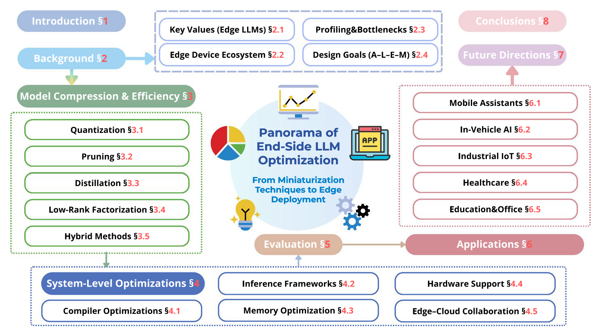
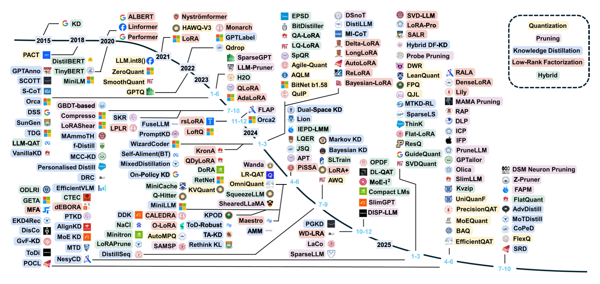
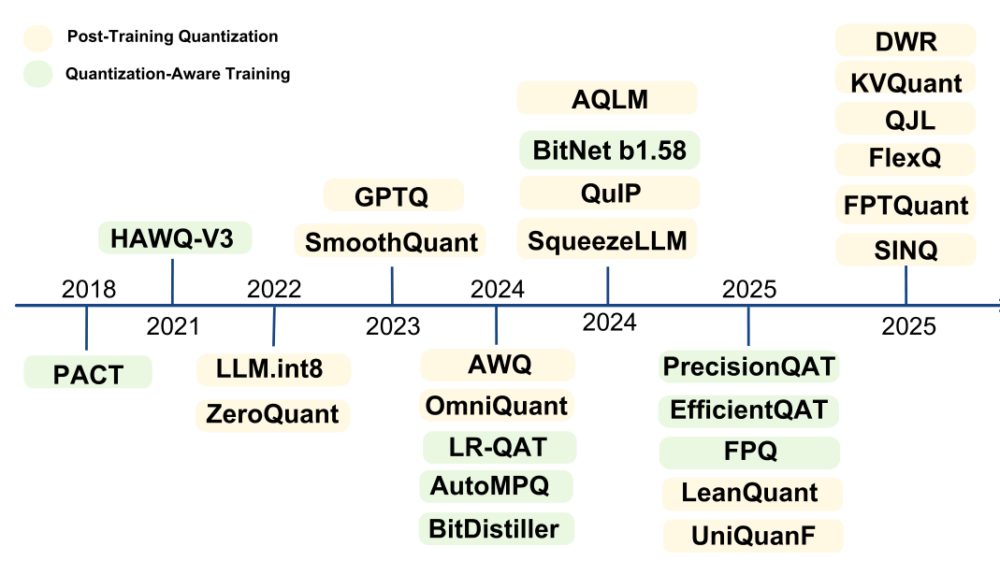
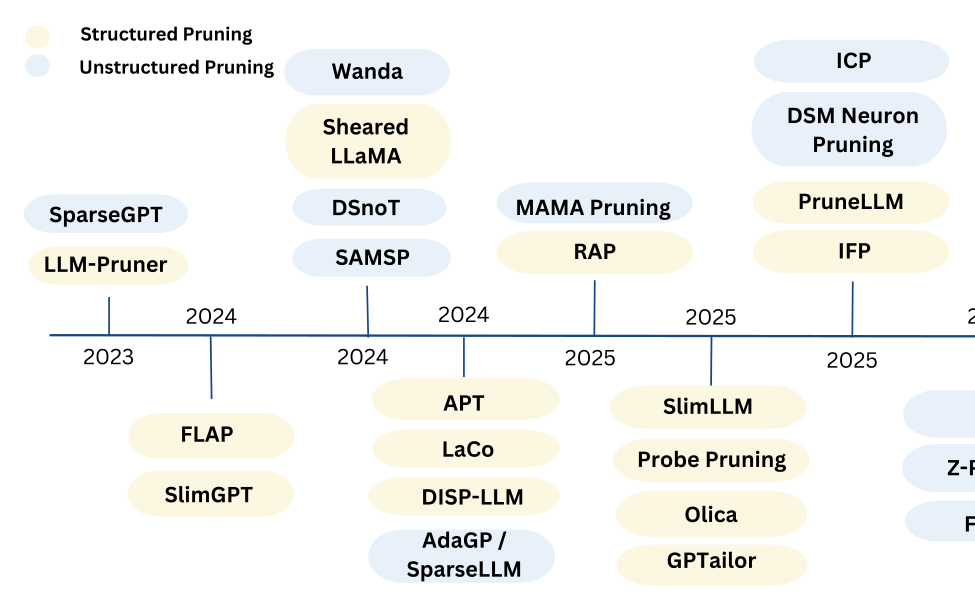
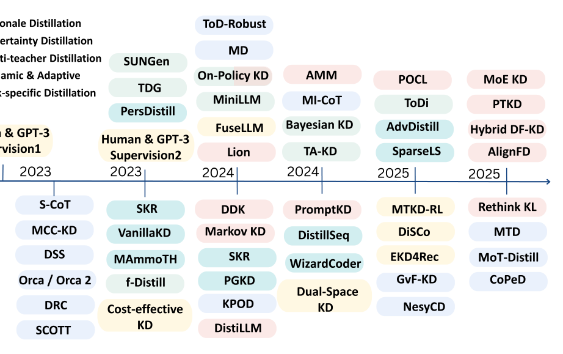
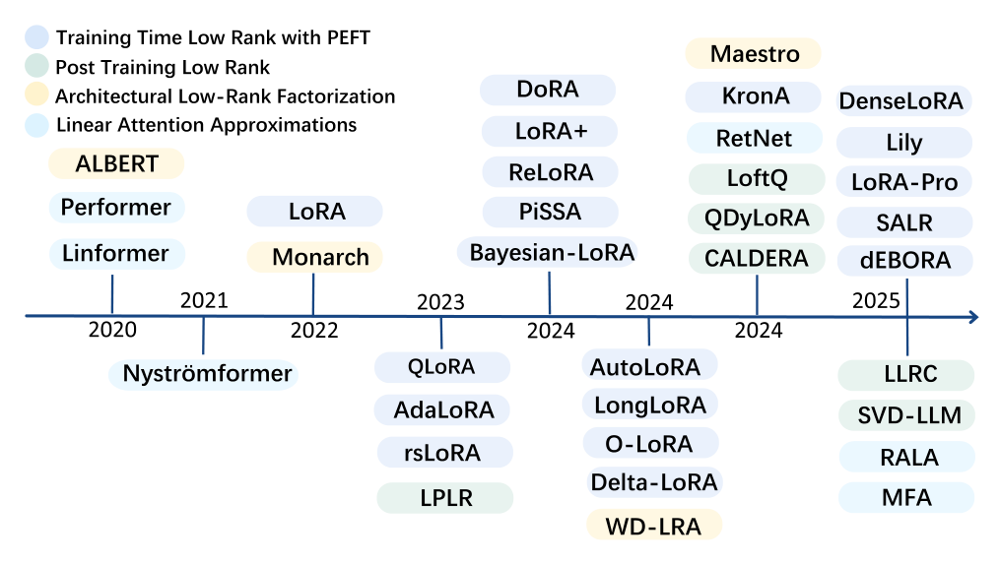
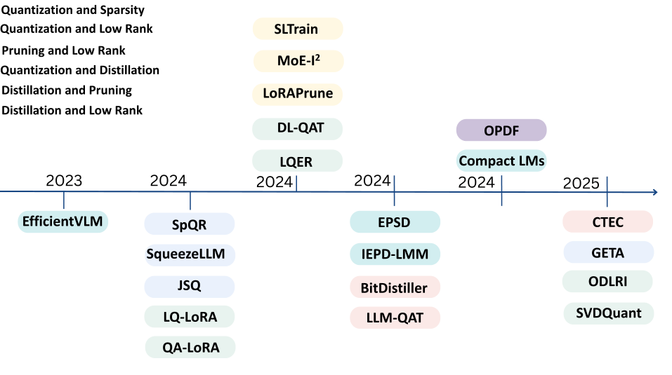
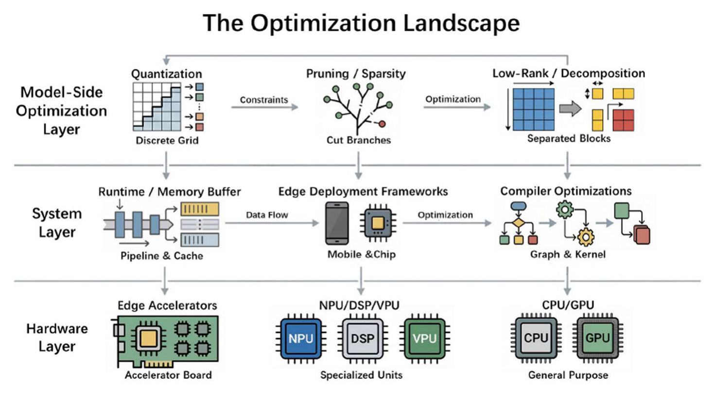
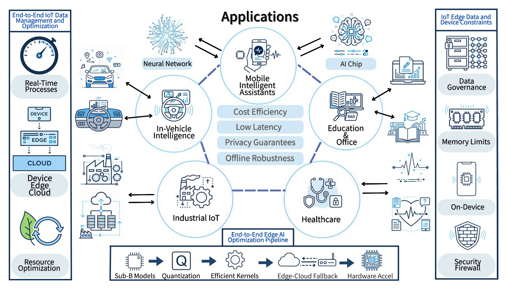

摘要
大语言模型正越来越多地部署在设备端与边缘侧，在这些场景中，内存容量、带宽、时延与隐私要求 支配着系统行为。本综述把端侧技术栈从算法到系统做了体系化梳理。在模型一侧，我们给出量化、 剪枝、知识蒸馏、低秩适配与混合流水线的清晰分类体系，说明代表性方法各自归属何处，以及它们 如何组合。在系统一侧，我们把这些技术与推理框架、编译器与运行时优化、算子融合以及 KV 缓存的 显式管理联系起来。我们进一步提出统一的 ALEM 评测协议，即精度（Accuracy）、时延（Latency）、 能耗（Energy）与内存（Memory），并在 10 亿至 40 亿参数的代表性模型上实例化该协议，由此揭示 若干实践性权衡：优先用量化解决内存与首词元时延问题；把结构化剪枝与可合并的低秩补偿配对使用； 把 KV 缓存当作一等子系统，用分页、压缩与逐出机制来管理。最后，我们梳理开放问题与未来方向， 包括把变换、校准与算子融合耦合起来的统一低位流水线、对结构化剪枝与蒸馏的联合搜索，以及把 稀疏、量化、低秩参数一并收敛为可直接推理权重、使训练与部署合一的路线。目标是搭建一座从 算法压缩通往资源对齐、可靠可用的设备端与边缘部署之间的实用桥梁。 https://github.com/LumosJiang/Awesome-On-Device-LLMs 是一个收录第 3、4 节完整参考文献的仓库。
关键词 大语言模型 · 模型压缩 · 量化 · 剪枝 · 知识蒸馏 · KV 缓存 · 低秩适配 · 混合方法 · 设备端与边缘推理 · ALEM 评测
1 引言
随着数据规模、模型容量与算力的协同增长，大语言模型（LLM）的发展极为迅速，GPT-3 （Brown et al. 2020）、LLaMA（Touvron et al. 2023）、GPT-4（Openai 2023）以及近期的 Qwen-3 （Yang et al. 2025）即为代表。除开放式生成之外，它们如今还能可靠地完成语义理解、指令遵循以及 代码合成与调试；近期的系统进一步把这些能力扩展到多模态输入与长上下文推理。与此同时，为在 普通商用硬件上高效训练与推理而设计的开放模型家族，如 OpenELM（Mehta 2024）、Phi-3 （Abdin et al. 2024）与 Gemma 2（Team et al. 2024），拓宽了实际部署中能力与效率之间的平衡 区间。面向设备端使用，MobileLLM（Liu et al. 2024）表明不足十亿参数的模型可以针对真实移动 负载定制，而 DeepSeek-R1（Deepseek et al. 2025）则通过强化学习推进了逐步推理。系统视角的 研究进一步指出，当时延、带宽与隐私成为主导因素时，移动与边缘执行是许多生成式 AI 体验的 天然归宿（Ale et al. 2024）。
实践中，LLM 已被用于智能个人助理、企业知识库问答与创意内容生成。除这些用途之外，部署正走向 实时性、可靠性与隐私要求严苛的场景，例如面向驾驶辅助的车载语音交互、工业物联网中的边缘侧 感知与决策，以及便携式医疗设备。这一趋势既被 MobileLLM 这类面向设备的建模工作所强化，也被 Qwen-3 这类强大的通用基线所推动，后者拓宽了多语言与工具调用能力；与此同时，DeepSeek-R1 所代表的基于强化学习的推理，也抬高了人们对必须能规划并为决策给出依据的设备端助手的期待。
近期若干系统研究（Lim et al. 2023; Meuser et al. 2024; Ning et al. 2025）量化了广泛落地的 主要障碍，大致可归为两类：（1）设备端资源需求过高；（2）云端集中式架构固有的局限。就设备端 资源而言，内存与算力占用是首要障碍。在标准 32 位浮点精度下，一个 70 亿参数模型约占用 28 GB 存储，而一个 1750 亿参数模型可能需要数百 GB，远超典型终端设备的容量。这一压力在推理期间 进一步加剧：激活张量以及自回归解码所需的键值（KV）缓存会消耗大量额外内存与 I/O 带宽， 直接推高时延与能耗。云端集中式方案虽然强大，却引入了显著的运维与隐私风险。把可能敏感的用户 内容送出设备会引发根本性的隐私顾虑。此外，移动与边缘环境中的网络抖动常常损害服务稳定性， 导致用户体验不可靠。最后，网络带宽与云端算力的持续性开销，使这类服务扩展到数十亿用户时的 经济可持续性受到挑战。上述压力共同推动了设备端与边缘部署：在智能手机、可穿戴设备、IoT 网关 或嵌入式控制器上本地执行推理，可获得更紧的隐私边界、弱网条件下稳定的低时延响应，以及对云端 基础设施更低的依赖。
为厘清范围，我们把“设备端”部署定义为面向移动级 SoC（例如配备数 GB 内存的智能手机）的部署， 把“边缘”部署定义为面向 Jetson 级加速卡或网关的部署。虽然我们会讨论微控制器（MCU）以说明 硬件约束的下界，但它们并不是当前 LLM 压缩技术的主要目标。
为弥合 LLM 规模与端侧预算之间的差距，近期工作大体沿两条相互交织的主线推进：模型层优化与 系统层优化。在模型层，量化、剪枝、知识蒸馏与低秩分解等技术已从孤立使用走向有策略地组合 多种手段的混合压缩。例如，FlatQuant（Sun et al. 2025）、GuidedQuant（Kim et al. 2025a）与 ResQ（Kim et al. 2025b）等量化方法通过抑制离群值实现了稳健的 W4A4 部署；ThinK （Xu et al. 2025）等 KV 缓存优化降低了长上下文开销；与此并行，剪枝方法（Probe Pruning （Le et al. 2025）、RotPruner（Chen et al. 2025））同时支持一次性裁剪与运行时调整。总体而言， 这些技术在紧约束的设备条件下重新定义了精度、时延与内存之间的权衡。
与模型侧进展互补的是横跨编译器、运行时与硬件集成的系统创新。高效注意力／解码算子（例如 FlashAttention（Dao et al. 2022）、FlashDecoding++（Hong et al. 2024））重新组织访存以缓解 I/O 瓶颈；分页式 KV 管理（例如 vLLM 的 PagedAttention（Kwon et al. 2023））在显存碎片化 的条件下提高了有效容量与吞吐，这对长上下文至关重要；编译器级优化（PyTorch 2.0 的 TorchDynamo/Inductor（Ansel et al. 2024）、Hidet 的任务映射（Ding et al. 2023））则捕获动态 计算图并为热点路径生成专用算子。在这些支柱之上，近期工作呈现出更深层融合的趋势。例如， 把 FlexAttention 与 PagedAttention 结合，可同时利用形状特化编译与在线算子自适应来稳定长上下文 吞吐（Joshi et al. 2025）。与此并行，运行时自适应压缩（Liu et al. 2025）、面向训练与推理的 统一多 GPU 调度（Li et al. 2025）以及超低位（1-2 位）通用算子（Georganas et al. 2025） 进一步缩小了算法、编译器与硬件之间的落差。
如图 1 所示，本综述沿一条从模型小型化到边缘部署的流水线展开。第 2 节界定端侧设备、剖析硬件 瓶颈，并阐明设备端部署的核心价值与 A-L-E-M 指标。第 2.4 节回顾五类技术——量化（第 3.1 节）、 剪枝（第 3.2 节）、知识蒸馏（第 3.3 节）、低秩分解（第 3.4 节）与混合方法（第 3.5 节）， 涵盖其动机、机制与局限。系统层优化在第 4.1 节至第 4.5 节详述：编译器优化（第 4.1 节）、 推理框架（第 4.2 节）、内存优化（第 4.3 节）、硬件支持（第 4.4 节）与端云协同（第 4.5 节）。 随后我们在第 5 节给出评测方法与基准，在第 6 节综述移动、车载、工业物联网、医疗健康与办公等 应用，在第 7 节讨论开放挑战与未来趋势，并在第 8 节作结。我们的目标是为端侧部署提供一份结构化的 参考，使决策能在模型—系统—硬件这一谱系上复用。

2 背景与动机
本节首先概述设备端 LLM 的核心价值主张，从而确立其动机；随后分析这些模型所处的异构硬件生态， 指出由该硬件带来的关键性能瓶颈；最后给出一套面向它们的完整评测框架。
2.1 设备端部署的核心价值
设备端 LLM 在隐私、时延、鲁棒性与成本效率上具有明显优势：
- 隐私与合规：本地推理可实现数据最小化、目的限制与受控留存，有助于满足《通用数据保护 条例》（GDPR）与《美国健康保险流通与责任法案》（HIPAA）（Union 2016; U.S. Department of Health and Human Services 2025）。
- 时延与可用性：消除云端往返使亚秒级交互更加稳定；面向语音与实时应用， 国际电信联盟电信标准化部门（ITU-T）G.114 建议单向时延低于 以获得可接受的质量 （International Telecommunication Union 2003）。平台路线图也强调设备端、低时延、可离线 运行的 AI 技术栈（Developers 2025）。
- 离线鲁棒性：在弱连接或间断连接条件下（例如工业车间、偏远地区）功能依然可用， 可完成摘要、自动语音识别（ASR）、自然语言理解（NLU）与领域问答（QA）（Developers 2025）。
- 成本与能效：把推理从云端转移到边缘可降低长期基础设施成本；标准化的边缘基准 （例如 MLPerf Mobile Inference Benchmark（Reddi et al. 2022））使时延、吞吐与能耗得以 同口径比较。
2.2 边缘设备生态
边缘设备是一类高度异构的网络边缘平台，负责本地的数据采集、计算、存储与通信， 包括智能手机、可穿戴设备、工业物联网控制器、车载系统以及近端微边缘节点 （例如 cloudlet（Shi et al. 2016）、微型数据中心（Satyanarayanan 2017））。 它们的共同特征包括贴近数据源、硬件异构、能耗与散热包络严苛，以及实时性能要求。近期的移动级 片上系统（SoC）平台凭借统一内存、低精度与混合精度加速器以及高速片内互连， 使设备端 LLM 推理变得可行（Developers 2025）。就部署形态而言，系统可分三类：仅设备端、 设备端与边缘协同、边缘与云端协同；这一选择决定了隐私边界、时延目标与资源预算如何在端到端 链路上落实。
2.3 设备端推理的根本瓶颈
设备端 LLM 推理的决定性挑战不在于算力不足，而在于同内存子系统的根本极限正面相遇， 这一现象被广泛称为“内存墙”。该瓶颈表现为两种不同却又相互关联的形式：静态内存容量与动态 内存带宽。
首先，数十亿参数模型的庞大体量构成静态容量瓶颈。例如一个 70 亿参数模型在其原生精度下需要 约 28 GB 存储，远超大多数消费级边缘设备可用的 DRAM。这一根本性失配意味着模型压缩不只是 一项优化，而是可行性的前提。
然而，对于那些能够放进内存的模型，更关键的动态带宽瓶颈随之出现，它直接决定词元生成速率。 根源在于自回归解码的运行特性，而自回归解码可分解为性能特征截然不同的两个阶段。初始的 预填充阶段并行处理输入提示，通常是计算受限的，能够有效利用设备的处理单元。与之形成鲜明对比， 随后的词元生成阶段是串行的，且完全受内存带宽制约。每生成一个词元，模型的整套参数—— 往往是数 GB 数据——都必须从相对缓慢的片外 DRAM 读入片上 SRAM 与计算单元。这种重复且高 数据量的搬运，使强大的计算核心在相当长的时间内处于空闲，于是决定端到端性能的首要因素 是访存速度，而非浮点运算。
因此，最具影响力的系统层优化，正是那些为缓解内存子系统承压而设计的优化。这些策略可以视为 对上述瓶颈的直接对策。诸如 FlashAttention（Dao et al. 2022）这类 I/O 感知算子，在算法层面 通过最小化注意力计算期间 DRAM 与 SRAM 之间的数据搬运来攻击带宽问题。与此同时，低位量化 （Xiao et al. 2024; Lin et al. 2024）以及分组查询注意力（GQA）（Ainslie et al. 2023）这类 架构改造，分别削减了必须搬运的数据总量（对应权重与 KV 缓存）。最后，先进的编译框架 （Ansel et al. 2024; Ding et al. 2023）优化整个执行图以降低开销，并生成能最大化内存效率的 硬件专用代码。
2.4 设计目标与指标：A-L-E-M
鉴于模型能力与硬件约束之间存在复杂的相互作用，评估设备端 LLM 系统的效能需要一套综合方法。 研究界大体上已收敛到一组共同定义性能边界的核心目标。为便于本综述内部表述清晰，我们把这些 标准判据组织为四个维度，统称 A-L-E-M。精度（A）仍是最基础的指标，使用 MMLU （Hendrycks et al. 2021）、BIG-bench Hard（BBH）（Suzgun et al. 2022）与 MT-Bench （Zheng et al. 2023）等基准进行评估。时延（L）由首词元时延（TTFT）与稳态生成速率衡量， 后者以词元/秒表示。能耗（E）以每词元或每任务的能耗（例如焦耳/词元）量化，通常在 MLPerf Mobile Inference Benchmark（Reddi et al. 2022）这类协议下测量。最后，内存（M）占用 以峰值 DRAM 使用量评估，重点关注 KV 缓存随序列长度如何增长。该行为深受 FlashAttention （Dao et al. 2022）这类算子与 PagedAttention（Kwon et al. 2023）这类内存管理器的影响。
在这些 A-L-E-M 维度之间取得最优平衡是核心挑战。为兼顾性能与成本，混合策略正在出现， 例如以边缘优先执行、云端兜底，或让紧凑的设备端模型与更大的服务端模型共享推测解码 （Ning et al. 2025）。归根结底，要在严苛的设备约束下提供稳定的低时延与高能效，就必须把 模型层技术（例如量化、剪枝）与系统层机制（例如编译器、KV 缓存策略）协同设计， 这一主题将贯穿本综述。
3 模型层优化
面向边缘的 LLM 小型化围绕五个家族展开：量化、剪枝、知识蒸馏、低秩分解与混合方法， 图 2 的关键进展时间线记录了它们的发展脉络。它们分别作用于精度、结构、监督信号与分解方式。 这些方法共同针对边缘场景的主要开销（参数、激活与 KV 内存；内存带宽与 I/O 流量；以及算力）， 同时在 A-L-E-M 判据下保持任务精度。我们按如下顺序展开：量化（第 3.1 节）、剪枝（第 3.2 节）、 蒸馏（第 3.3 节）、低秩（第 3.4 节）与混合方法（第 3.5 节）。

3.1 量化
3.1.1 背景
量化是把高精度数值格式（例如 32 位浮点，FP32）映射为更低位数表示（通常是 8 位或 4 位整数， 即 INT8/INT4）的过程。它的主要目标是缩减模型的内存占用，并借助硬件对快速低精度算术的支持 来加速推理。早期在计算机视觉与中等规模自然语言处理上的研究表明，模型可以在四至八位精度下 有效工作。典型例子包括学习步长量化方法（Learned Step-Size Quantization，Steven et al. 2020） 与自适应舍入方法（Adaptive Rounding，Nagel et al. 2020）。这些工作表明量化可以在不重训练的 情况下完成，并激发了把它应用于 LLM 的后续研究。然而，LLM 因其庞大的参数量、长上下文注意力 与沉重的内存需求带来了额外挑战。
把量化应用于 LLM 时会出现若干新问题。（i）激活离群值：注意力层中尖锐的激活分布往往包含 难以精确量化的离群值。这些离群值可能导致输出不稳定，LLM.INT8（Dettmers et al. 2022）与 SmoothQuant（Xiao et al. 2024）等方法通过保护敏感通道或平移激活取值范围来应对。 （ii）KV 缓存内存：在自回归解码过程中，KV 缓存为每个词元保存隐藏状态，可能占据很大一部分 内存。量化 KV 缓存有助于延长上下文长度并降低运行时成本（Liu et al. 2024; Yue et al. 2024; Zhang et al. 2024）。（iii）实际效率：即使量化降低了数值精度，能否真正加速仍取决于优化过的 算子实现、编译器支持以及推理时的调度（Kwon et al. 2023; Li et al. 2024）。 （iv）跨硬件一致性：在图形处理器（GPU）、中央处理器（CPU）与边缘加速器之间保持一致稳定的 性能仍是一大挑战（Frantar et al. 2023; Shao et al. 2024）。
为应对这些问题，LLM 量化研究大致可分为两大类：（i）训练后量化（PTQ），在模型训练完成后 校准权重与激活，不更新参数；（ii）量化感知训练（QAT），在训练过程中引入量化效应，使模型 学会适应低位算术。在这些框架之内，我们还会讨论低于 4 位的表示与混合表示，它们采用专门的结构 或离群值处理策略来推进压缩极限。以下各小节将详细考察这些类别。表 1 与图 3 给出了该领域代表性 方法的概览与时间线。
通俗直觉：量化用更少的比特表示权重与激活，例如把 16 位浮点换成 4 位整数，从而直接缩小模型 体积、减少每次运算需要搬运的字节数，进而在带宽受限的边缘设备上降低内存占用、改善时延。主要的 权衡在精度：过于激进的位宽压缩会扭曲敏感的权重分布，对偏重推理的任务尤为如此。实践中，量化 往往是最先施加的压缩步骤，因为它不需要改变模型架构，且能与大多数硬件上的低位算子顺畅集成。
3.1.2 训练后量化
训练后量化在预训练之后进行，只需少量校准集，不更新权重。它因免去完整重训练、且能契合既有推理 栈而被广泛采用。
离群值感知的八位推理只把极小一部分通道保留在高精度，其余通道量化，如 LLM.INT8 （Dettmers et al. 2022）。跨层缩放把激活的变化转移到权重上，使 SmoothQuant （Xiao et al. 2024）得以实现稳定的八位权重与八位激活。端到端 PTQ 流水线为 GPT 类模型把 细粒度量化与局部蒸馏结合起来，如 ZeroQuant（Yao 2022）。误差补偿的逐列近似支撑了 GPTQ （Frantar et al. 2023）中三至四位的仅权重量化。保护约 1% 的显著通道提升了 AWQ （Lin et al. 2024）在四位下的鲁棒性。通道重排与聚类策略针对 RPTQ（Yuan et al. 2023）中的 三位激活。与架构无关的校准在 OmniQuant（Shao et al. 2024）中追求 LLaMA、OPT 与 Falcon 上一致的性能。保函数变换（FPTQuant（van Breugel et al. 2025））把激活缩放推广为数学等价 映射，从而在没有重训练开销的前提下实现精确的 4 位量化。从硬件协同设计的角度，FlexQ （Zhang et al. 2025）以逐层敏感度自适应与融合 GPU 算子优化 INT6 量化，在精度与吞吐之间取得 平衡。进一步地，PTQ 越出模型权重的范围，KVQuant（Hooper et al. 2024）把目标指向 KV 缓存， 通过分层缓存量化实现了高达一千万词元的上下文长度推理。与之互补，QJL（Zandieh et al. 2024） 提出用于 KV 缓存量化的 1 位量化 Johnson-Lindenstrauss（JL）变换，消除了额外开销并保持近乎 无损的精度，为长上下文推理提供了一条超高效压缩路径。
| 方法 | 发表处 | 要点 |
|---|---|---|
| 训练后量化 | ||
| LLM.int8（Dettmers et al. 2022） | NeurIPS 22 | 检测离群特征通道并让其保持高精度（FP16），其余通道量化为 INT8，使 GPT-3 规模的推理可在单节点上运行。 |
| ZeroQuant（Yao 2022） | NeurIPS 22 | 端到端 PTQ 框架，具备细粒度、硬件友好的量化与逐层知识蒸馏。 |
| GPTQ（Frantar et al. 2023） | ICLR 23 | 利用近似二阶信息的一次性权重量化，实现精确的 3/4 位量化。 |
| SmoothQuant（Xiao et al. 2024） | ICML 23 | 通过平滑激活离群值把量化难度从激活迁移到权重，实现 W8A8 量化。 |
| AWQ（Lin et al. 2024） | MLSys 24 | 激活感知的权重量化；保护约 1% 的显著权重，以维持 4 位模型的精度。 |
| OmniQuant（Shao et al. 2024） | ICLR 24 | 统一的校准方案，结合权重裁剪、学习步长与跨架构一致性。 |
| FPTQuant（van Breugel et al. 2025） | arXiv 25 | 引入保函数变换（pre-RoPE、value、MLP 缩放、动态缩放）在不改变模型行为的前提下重塑激活分布，实现精确的静态 INT4 量化。 |
| FlexQ（Zhang et al. 2025） | arXiv 25 | 训练后 INT6 量化，配合逐层敏感度自适应与定制 GPU 算子（W6A6/W6A8），兼顾精度与效率。 |
| KVQuant（Hooper et al. 2024） | arXiv 25 | 聚焦超长上下文 LLM 推理（最长 1000 万词元）的 KV 缓存量化；提出分层量化与混合精度分配，实现内存高效部署。 |
| QJL（Zandieh et al. 2024） | AAAI 25 | 用于 KV 缓存量化的 1 位量化 Johnson-Lindenstrauss 变换，在消除开销的同时取得与高位方法相当的长上下文压缩。 |
| SqueezeLLM（Kim et al. 2024） | ICML 24 | 敏感度驱动的稠密—稀疏量化，实现稳健的 3 位模型。 |
| AQLM（Vage Egiazarian et al. 2024） | arXiv 24 | 带可学习码本的加性量化，实现 2-4 位极端压缩。 |
| QuIP（Tseng et al. 2024） | ICML 24 | 使用非相干旋转与 E8 格码本，提升量化鲁棒性。 |
| LeanQuant（Zhang and Shrivastava 2024） | ICLR 25 | 损失误差感知的量化网格保留逆 Hessian 离群值，使大型模型也能在有限 GPU 上实现精确的 2-4 位量化。 |
| DWR（Hao et al. 2025） | AAAI 25 | 在量化过程中回收被丢弃权重中的信息，无额外开销地提升低位精度。 |
| UniQuanF（Park et al. 2025） | ACL 25 | 统一均匀量化与二值编码量化（UQ + BCQ），实现精确的 LLM 压缩，在 GSM8K 与推理基准上取得当前最佳结果。 |
| SINQ（Sung et al. 2025） | arXiv 25 | 球面整数量化，无需显式分离即可处理离群值，使低比特 PTQ 更为有效。 |
| 量化感知训练 | ||
| PACT（Choi et al. 2018） | ICLR 18 | 引入可学习的激活裁剪参数以最小化量化误差。 |
| HAWQ-V3（Yao et al. 2021） | arXiv 21 | Hessian 指导的比特分配，配合二进网格以保证超低位训练的稳定性。 |
| LR-QAT（Bondarenko et al. 2024） | arXiv 24 | 低秩适配器结合激活检查点，使 7B 规模模型上的 QAT 变得可行。 |
| AutoMPQ（Xu et al. 2024） | TETCI 24 | 自动混合精度量化框架，使用少样本采样与基于适配器的位宽搜索；与 QAT 无缝集成以实现高效的精度分配。 |
| BitDistiller（Du et al. 2024） | ACL 24 | 面向低于 4 位 LLM 的自蒸馏 QAT；结合非对称量化、裁剪与置信度感知的 KL 目标，以适中的数据与算力取得强劲的 3 位和 2 位精度。 |
| EfficientQAT（Chen et al. 2025） | arXiv 25 | 提出高效的 LLM QAT 流水线：先分块训练，再端到端优化量化参数，在保持精度的同时显著降低训练成本。 |
| PrecisionQAT（Zhou et al. 2025） | arXiv 25 | 采用可学习自适应模块动态调整量化步长，并引入非均匀量化方案以更好拟合多样的激活分布。 |
| FPQ（Pang and Cai 2025） | arXiv 25 | 通过引入特征扰动与隐式 Hessian 正则来稳定量化感知训练，改善 QAT 的收敛性与鲁棒性。 |
| BitNet b1.58（Ma et al. 2024） | arXiv 24 | 探索三值参数化 ，用于约 1.58 位的 LLM。 |

与此互补的工作还包括：匹配任务损失的损失感知校准（Nahshan et al. 2020）、用拼接实现更紧致 重建的位分裂（Wang et al. 2020）、用于稳定超低位设置的随机丢弃（Wei et al. 2023a），以及通过 等价平移或缩放来抑制离群值（Wei et al. 2023b）。基于加性码本的量化在极端的二至三位区间以具 竞争力的精度展开探索（Vage Egiazarian et al. 2024）。实践中，实际收益取决于算子支持与内存 带宽，因此报告 PTQ 结果时应同时给出时延、内存与算子细节（Li et al. 2024）。
低于 4 位的 PTQ 与混合表示：在 4 位以下，若没有专门设计，PTQ 或 QAT 单独都不足以保证稳定 性能。为此，研究采用离群值处理与混合参数化。离群值处理：SqueezeLLM（Kim et al. 2024）在 3 位下采用敏感度驱动的非均匀分配与稠密—稀疏混合结构来保护异常权重。SpQR （Dettmers et al. 2023）把离群权重保留为高精度稀疏条目。SINQ（Sung et al. 2025）进一步引入 球面整数量化，无需显式分离即可处理离群值。结构与算法设计：AQLM （Vage Egiazarian et al. 2024）与 QuIP（Tseng et al. 2024）使用加性码本与基于格的变换来稳定 二至三位区间。LeanQuant（Zhang and Shrivastava 2024）采用损失误差感知的量化网格。UniQuanF （Park et al. 2025）统一了均匀量化与二值编码量化。DWR（Hao et al. 2025）回收被丢弃的权重。 面向受限设备，Agile-Quant（Shen et al. 2025）把激活感知量化与词元剪枝结合起来。
3.1.3 量化感知训练
量化感知训练（QAT）把量化效应纳入训练循环，使模型适应低位算术。虽然计算代价高于 PTQ， 但在极端位宽（例如权重或激活 2-3 位）下，QAT 在大模型上提供的精度一致性最好。
第一个研究方向是让 QAT 在现实资源限制下变得可行。LR-QAT（Bondarenko et al. 2024）引入低秩 辅助模块与激活检查点，使数十亿参数模型也能在普通 GPU 上完成 QAT。EfficientQAT （Chen et al. 2025）以步长优化组织分块更新，在大型 LLM 上实现权重与激活联合 2 位量化，而零样本 性能退化有限。与此互补的研究分析了混合精度设置（例如 W4A8），并提出在训练中防止下溢与溢出的 技术（Lee et al. 2024）。同样互补的是，PrecisionQAT（Zhou et al. 2025）采用可学习自适应模块 进行步长控制，并用非均匀量化更好地匹配激活分布。继续向 4 位以下推进，BitDistiller （Du et al. 2024）把 QAT 与自蒸馏耦合，使用非对称量化、裁剪与置信度感知的 KL 损失，以适中的 数据与算力取得强劲的 3 位与 2 位结果。
第二个方向建立理论与算法上的稳定性基础。HAWQ-V3（Yao et al. 2021）利用曲率信息指导比特分配， 在低位宽下实现敏感度感知的精度分配。在激活一侧，PACT（Choi et al. 2018）引入可学习裁剪函数 来约束激活分布、降低量化噪声。近期工作如 FPQ（Pang and Cai 2025）引入特征扰动与隐式 Hessian 正则，以在极端比特约束下稳定 QAT 的收敛。较早的方法如 LSQ 与 I-BERT 至今仍是现代 QAT 流程中的 标准初始化或辅助约束（Steven et al. 2020; Kim et al. 2021）。
从系统视角看，有效的 QAT 会把数值目标与运行时约束对齐。当代流水线把无数据或弱监督训练与架构 启发式（例如逐通道缩放、范围正则）以及 KV 缓存量化等内存感知目标结合起来。AutoMPQ （Xu et al. 2024）这类自动混合精度框架进一步把少样本位宽搜索集成进 QAT，减少人工调参并实现 逐层的自适应精度分配。评测研究强调，精度、时延、内存占用与算子支持必须一并考虑，因为训练带来的 收益只有在转化为真实推理加速时才有意义（Li et al. 2024）。总体而言，QAT 通过在有控精度损失下 实现激进的低位量化来补充 PTQ，为下文讨论的混合与混合精度方案奠定基础。
低于 4 位的 QAT 与基于训练的方法：对于极端压缩，从头训练或大规模微调可以产生专门的低位 结构。BitNet b1.58（Ma et al. 2024）探索了三值参数化 用于约 1.58 位的 LLM，表明大规模训练能够容纳激进的量化约束。
3.1.4 开放问题与展望
尽管进展迅速，仍有若干开放问题，它们直接反映了 LLM 量化的核心挑战。4 位以下权重与激活的联合 量化依然脆弱，对复杂推理任务尤其如此。即使在近期效率有所改善的情况下，QAT 的高计算成本依旧是 百亿参数以上模型的障碍。此外，面向极长上下文的 KV 缓存稳健压缩尚缺乏标准化评测协议，使得 KVQuant（Hooper et al. 2024）与 WKVQuant（Yue et al. 2024）这类方法之间难以直接比较。最后， 把一套量化方案迁移到不同模型家族与硬件后端时仍能保持一致的性能，依然是一个主要目标。
展望未来，该领域正沿若干关键轨迹推进以回应这些问题。在理论层面，一个主要目标是建立统一视角， 解释为何 Hadamard 旋转（Tseng et al. 2024）与加性码本（Vage Egiazarian et al. 2024）这类 结构技术能如此有效地稳定极端量化。从系统集成的角度看，进展取决于把原生低位算子支持扩展到主流 服务生态之中，这包括集成进 vLLM（Kwon et al. 2023）这类分页注意力框架以及 TensorRT、ONNX Runtime 这类编译器后端，而这对把理论收益与实际推理加速对齐至关重要（Li et al. 2024）。进一步， 前沿正走向跨技术协同设计：在硬件感知调度之下把量化与稀疏化、剪枝、蒸馏结合起来。这种整体式 方法以 SqueezeLLM（Kim et al. 2024）、SpQR（Dettmers et al. 2023）等框架为代表，目标是在 A-L-E-M 各维度上给出可预期的权衡。混合专家（MoE）模型的兴起也带来新的挑战，需要专门的校准 策略来处理稀疏专家路由，MoEQuant（Hu et al. 2025）探索了这一方向。随着这些进展成熟，量化 有望继续作为高效 LLM 推理的基石。
3.2 剪枝
3.2.1 背景
剪枝是一种基础压缩策略，通过剔除冗余参数来提升推理效率。对 LLM 而言，其庞大规模使重训练代价 高得难以承受，传统的“剪枝再微调”范式已不切实际。这推动了剪枝研究的转向：从迭代式重训练转向 高效、往往无需训练的一次性方法。新一代剪枝技术被设计为计算开销轻、对异构层敏感度具备架构感知， 并且为真实硬件加速而结构化。因此，当代研究不再把剪枝仅视为参数删除，而视为一个精细的优化问题。
在方法论上，剪枝技术以其剔除组件的粒度相区分。非结构化剪枝删除单个权重，这种做法的压缩 潜力最大，但会产生不规则稀疏模式，需要专门硬件或软件才能加速。与之相对，结构化剪枝删除 整个架构单元（例如神经元、注意力头，甚至整层），得到更小且稠密的模型，可以在标准硬件上高效 执行。当代研究的一个显著趋势是把两种范式整合进自适应框架，将结构化稀疏的可解释性与部署效率， 同非结构化稀疏的灵活性结合起来。这些发展勾画出一条新兴路线：LLM 剪枝正走向既准确紧凑、 又硬件高效且易于部署的方法。下文第 3.2.2 节与第 3.2.3 节将详细考察这些类别，代表性方法汇总于 表 2 与图 4。
通俗直觉：剪枝从已训练模型中移除冗余权重或整个子结构（注意力头、层、通道），得到一个 运算量更小的网络。当剪枝是结构化的，它暴露出可在标准硬件上高效运行的稠密子图，从而改善时延与 能耗。主要权衡仍在精度：去掉错误的组件会破坏复杂推理，而恢复往往需要蒸馏或轻量重训练。 剪枝在与稀疏感知算子结合、或作为量化之前的预处理步骤时最为有效。
3.2.2 结构化剪枝
结构化剪枝移除神经元或通道、注意力头乃至整层等架构单元，从而在既有硬件上暴露出稠密计算。 早期工作集中于识别重要的子单元并加入轻量恢复。LLM-Pruner（Ma et al. 2023）以任务无关的图分析 确立基线：它剪掉耦合结构，并用 LoRA 做快速恢复，在中等程度剪枝后仍保留原模型的大部分能力。 为避免额外的适配过程，FLAP（An et al. 2024）提出基于激活变化性的波动判据，并施加偏置补偿， 从而在高稀疏度下实现免重训练剪枝，效率提升显著。SlimLLM（Guo et al. 2025）把注意力头的 Pearson 相似度与前馈网络通道的主成分分析（PCA）整合进统一的重要性框架，为各层分配非均匀的 剪枝比例，并用线性回归恢复步骤找回精度。沿这一路线，Olica（He and Lin 2025）与 SlimGPT （Ling et al. 2024）借助 PCA 与最优脑外科医生论证进一步降低对重训练的依赖，相比 LLM-Pruner 获得更稳定的一次性剪枝行为。近期进展同时改进了选择判据与掩码的实际实现：SPAP （Hu and Yuan 2025）给出基于惩罚项的交替优化来决定保留哪些单元，从而管理稀疏度与模型保真度 之间的权衡；PFN（Liu et al. 2025）从 ICA 识别出的模块推导掩码以保持全局功能；另一条不同思路 是 MaskPrune（Qin et al. 2025），它学习强制逐层注意力头数与 FFN 宽度均匀的二元掩码， 在保持竞争力的同时简化稠密推理与剪枝后训练。
除了改进剪枝信号与恢复机制，第二条线索把剪枝重新诠释为架构重塑的手段。LoRAShear （Chen et al. 2023）在渐进训练过程中把信息从被剪结构转移到存活结构，利用预训练数据与指令 数据动态恢复性能。ShearedLLaMA（Xia et al. 2024）把剪枝重构为目标架构塑形，通过结构化重组 得到原模型的紧凑版本，无需大量重训练即可高效部署。APT（Zhao et al. 2024）把自适应剪枝与 自适应微调结合起来，移除与任务无关的结构并扩展必要模块，从而在 RoBERTa、T5 等多样架构上 实现有效压缩。LaCo（Yang et al. 2024）把连续多层折叠成单个前置层，在保持拓扑与架构的同时 降低深度，模型性能退化极小。Compresso（Guo and Jiahang 2023）使用协同提示，让模型自身参与 剪枝决策，这一共同学习框架因此在不损害理解能力的前提下提升了效率。GPTailor （Guinan et al. 2025）从基础模型与微调模型池中剪切并拼接层，组装出紧凑而高性能的复合模型， 代表了跨模型结构融合的方向，为高效模型组装提供了架构级剪枝的途径。
在决策层面，也有方法研究如何制定剪枝策略本身。DISP-LLM（Gao et al. 2024）引入维度无关的 重要性评分，把异构组件放到统一尺度上公平比较。精度预测器随后自动化稀疏度分配。例如，基于 梯度提升决策树的预测器（Ji et al. 2023）搜索剪枝配置，在语言建模与推理基准上相比均匀分配的 基线表现出一致改进。从学习式预测器转向信息驱动的分配，PruneLLM（Yang et al. 2025）通过信息 传递来分配稀疏度：先在块间分配非均匀预算，再在块内划分给注意力与 MLP，因此取得了比 FLAP 等 基于波动的方法更低的困惑度。进一步，EvoP（Shangyu et al. 2025）通过基于聚类的采样构建多样化 校准集，然后在稀疏度预算下对庞大的逐层剪枝模式空间做进化搜索，以找出稳健的剪枝配置。总体 而言，这些进展把剪枝当作自适应决策问题，推动结构化剪枝从纯粹的删除走向建设性的模型设计。
与在部署时固定的静态策略不同，最后一条工作线索提出在推理时针对每个请求与运行时预算调整所保留 结构的策略。IFP（Hou et al. 2025）引入以提示为条件的 FFN 行列掩码，使计算动态适配每个输入， 在保持与更大稠密模型相当效率的同时大幅降低时延。与 IFP 不同，Probe Pruning（Le et al. 2025） 运行一个极小的探针以获得批次相关的隐藏状态，再推导出用于解码的逐批次结构化掩码；在同等稀疏度 下，其语言建模质量明显优于静态剪枝基线。此外，RAP（Liu 2025）把剪枝视为运行时控制：它用一个 轻量强化学习智能体，依据运行时信号（序列长度、批大小以及参数／KV 内存占用）在解码过程中调整 块级剪枝，使系统保持在预算之内。
3.2.3 非结构化剪枝
非结构化剪枝删除单个权重而非整个单元，因而能实现更高稀疏度与更细粒度的压缩，但会带来不规则 模式。早期工作把二阶思想引入 LLM，以在高稀疏度下保持精度。SparseGPT（Frantar and Sparsegpt 2023）把最优脑外科医生式的更新适配到 LLM，识别可剪权重并补偿其余权重，在大型模型的高稀疏度下 保持强劲性能。由于 SparseGPT 的计算仍然偏重，Wanda（Sun et al. 2024）提出一个简单判据， 把权重幅值与对应输入激活的范数相乘；它在保持相近精度的同时快了几个数量级。为缓解中高稀疏度下 剪枝误差的累积，ICP（Luo et al. 2025）引入新颖的滑窗式分块补偿步骤与简单的稀疏度重排， 在不增加内存占用的前提下提升精度，优于 SparseGPT、Wanda 等先前方法。AdaGP 与 SparseLLM （Bai et al. 2024）把全局剪枝表述为带辅助变量的协同子问题，在极端稀疏度下取得更好的鲁棒性与 更低的困惑度。在层间分配层面，DLP（Chen et al. 2025）使用基于中位数的相对重要性分布为各层 分配非均匀稀疏度，相比更简单的均匀分配基线获得更均衡的剪枝与更高的模型质量。
走向更细粒度的选择，Z-Pruner（Bhuiyan et al. 2025）用 Z 分数放大了权重之间的差异，在 50% 稀疏度下仍维持强劲的零样本精度。为克服静态掩码的局限，DSnoT（Zhang et al. 2024）在固定 稀疏度下执行免训练的“剪—生长”更新，在高稀疏度下提升稀疏 LLM 的质量，效率远超基于 LoRA 的 微调。Z-Pruner 强化了静态判别，DSnoT 引入了动态掩码，但两者仍依赖相对简单的重要性信号。 在 SparseGPT 的基础上，SAMSP（Shao et al. 2024）融合最优脑外科医生与最优脑损伤两类信号， 并依据 Hessian 敏感度分配混合稀疏度，在困惑度与零样本精度上都优于 SparseGPT。进一步， MAMA（Jiang et al. 2025）整合移动量与幅值信号来识别可剪权重，然后在每层内部重新分配低重要性 的权重值以强化关键连接；与蒸馏结合后，它相比仅用幅值的简单剪枝基线取得了一致但幅度不大的改进。
近期工作还把剪枝的目标拓展到压缩之外。FAPM（Huang et al. 2025）沿任务向量剪枝，以缓解持续 微调中的灾难性遗忘，在保持强劲下游精度的同时把遗忘降到最低。DSM Neuron Pruning （Ameen Ali Ali et al. 2025）用积分梯度识别并移除有害神经元，在 MMLU 等推理与泛化基准上取得 可测量的提升。总体来看，这些结果说明一个显著且仍在进行的转变：剪枝不再只为缩小体积，而成为 减少遗忘、增强泛化的工具。
3.2.4 开放问题与展望
尽管从迭代式剪枝—重训练到高效一次性剪枝进展迅速，关键挑战依然存在。第一，全自动的非均匀 稀疏度调度是核心：GBDT 预测器（Ji et al. 2023）这类精度预测器，以及 UniCuCo （Ye and Tang 2025）这类“一次训练、处处可用”的剪枝模型，承诺以极小的搜索成本实现按需压缩。 第二，剪枝目标应从体积与时延扩展到能力塑形：如 DSM Neuron Pruning（Ameen Ali Ali et al. 2025） 那样以神经元级剪枝换取鲁棒性与泛化，又如 FAPM（Huang et al. 2025）那样面向持续学习做遗忘感知 剪枝；而 GPTailor（Guinan et al. 2025）这类组装式方法把剪枝重新解释为建设性的模型设计。 第三，当前评测过度依赖困惑度与少数下游任务（Wang et al. 2024）；未来研究应采用更全面的基准 套件，把推理、创造性与安全性维度纳入对 LLM 压缩影响的评估（Wang et al. 2024; Chavan et al. 2024）。最后，把剪枝与量化、蒸馏集成起来，是在边缘规模上取得更高压缩率与更好 硬件效率的一条务实且日益重要的路径。
| 方法 | 发表处／来源 | 要点 |
|---|---|---|
| 结构化剪枝 | ||
| LLM-Pruner（Ma et al. 2023） | NeurIPS'23 | 任务无关的图分析；剪掉耦合结构；轻量 LoRA 恢复；LLaMA-7B 剪 20% 后保留约 95% 性能。 |
| FLAP（An et al. 2024） | AAAI'24 | 基于激活变化性的波动判据；偏置补偿；LLaMA-7B 上剪掉最多 50%，获得 ≤66% 的加速。 |
| SlimGPT（Ling et al. 2024） | NeurIPS'24 | 基于 OBS 的结构化剪枝，只需极少重训练。 |
| ShearedLLaMA（Xia et al. 2024） | ICLR'24 | 剪枝到目标架构；由 LLaMA2-7B 得到的 1.3B 学生模型超过 TinyLlama-1.1B。 |
| APT（Zhao et al. 2024） | ICML'24 | 自适应剪枝 + 自适应微调；移除与任务无关的结构；参数减少 60% 后仍保留 ≥98% 性能（RoBERTa/T5）。 |
| LaCo（Yang et al. 2024） | EMNLP'24 | 层折叠：把连续多层合并为单个前置层；剪 25-30% 后保留约 80% 性能。 |
| DISP-LLM（Gao et al. 2024） | NeurIPS'24 | 维度无关的重要性评分，使异构单元在统一尺度下可比。 |
| SlimLLM（Guo et al. 2025） | ICML'25 | 整体重要性（注意力头／通道上的 Pearson 相似度与 PCA）；线性回归恢复。 |
| Olica（He and Lin 2025） | ICML'25 | 通过 PCA 分析实现免重训练的一次性结构化剪枝；一次性剪枝表现强劲。 |
| GPTailor（Guinan et al. 2025） | arXiv'25 | 从基础／微调模型池中剪切并拼接层；Llama2-13B 剪 25% 后保留 97.3% 基线性能，优于 LaCo。 |
| PruneLLM（Yang et al. 2025） | ICML'25 | 信息传递指标在块间与块内（注意力／MLP）分配非均匀预算；精度—稀疏度权衡优于均匀比例。 |
| IFP（Hou et al. 2025） | ICML'25 | 以提示／任务为条件的结构化掩码（FFN 行列）；降低 TTFB 并加速端到端解码。 |
| Probe Pruning（Le et al. 2025） | ICLR'25 | 运行时：用轻量探针获得批次相关状态，再推导用于解码的逐批次结构化掩码（注意力头／通道）。 |
| RAP（Liu 2025） | arXiv'25 | 运行时强化学习智能体在参数与 KV 缓存预算下调整结构化剪枝（注意力头／FFN／层）。 |
| 非结构化剪枝 | ||
| SparseGPT（Frantar and Sparsegpt 2023） | ICML'23 | OBS 式二阶补偿；即便对 OPT-175B，在 50-60% 稀疏度下仍保持质量。 |
| Wanda（Sun et al. 2024） | ICLR'24 | 幅值 × 输入范数判据；质量与 SparseGPT 相近，但快几个数量级（如 LLaMA-65B 上 5.6 秒对约 1350 秒）。 |
| DSnoT（Zhang et al. 2024） | ICLR'24 | 固定稀疏度下的免训练“剪—生长”更新；显著降低 Wanda 剪枝 LLaMA-7B 的困惑度；比 LoRA 微调快得多。 |
| SAMSP（Shao et al. 2024） | ICASSP'24 | 一次性、敏感度感知的混合稀疏度（OBS/OBD 融合）；相比 SparseGPT 改善困惑度与零样本精度。 |
| AdaGP / SparseLLM（Bai et al. 2024） | NeurIPS'24 | 把全局剪枝表述为带辅助变量的协同子问题；高稀疏度下收益显著。 |
| DLP（Chen et al. 2025） | ICML'25 | 基于中位数的相对重要性分布，用于非均匀的逐层稀疏度。 |
| Z-Pruner（Bhuiyan et al. 2025） | IEEE AICCSA'25 | 用 Z 分数统计放大权重间差异；50% 稀疏度下零样本精度强劲。 |
| MAMA pruning（Jiang et al. 2025） | arXiv'25 | 移动量与幅值信号结合层内重分配。 |
| FAPM（Huang et al. 2025） | EMNLP'25 | 沿任务向量的遗忘感知剪枝；仅 0.25% 遗忘即取得 99.67% 下游精度。 |
| DSM Neuron Pruning（Ameen Ali Ali et al. 2025） | COLM'25 | 用积分梯度移除有害神经元；LLaMA2-7B 上 MMLU 提升 4.78%。 |
| ICP（Luo et al. 2025） | CVPR'25 | 滑窗式分块即时补偿 + 稀疏度重排。 |

3.3 知识蒸馏
3.3.1 背景
随着 LLM 扩展到数千亿参数，其推理与存储成本给实际部署带来重大挑战。在各种压缩技术中， 知识蒸馏（KD）（Hinton et al. 2015）能有效地把知识从大型教师模型迁移到紧凑的学生模型， 使其可用于移动设备（Li and Zhou 2025）、工业边缘系统（Li et al. 2025）等时延敏感、资源受限的 环境。与剪枝或低秩分解不同，KD 保留了表示层面与行为层面的知识，因而能在精度损失极小的前提下 取得强压缩。早期 KD 主要对齐教师模型最终的 softmax 输出（Sun et al. 2020; Jiao et al. 2020）， 侧重结果的模仿，却忽视了中间推理过程，而后者对 LLM 的多步推理至关重要。
为克服这些局限，现代 KD 走向更丰富、更具自适应的监督范式。（i）过程式 KD（第 3.3.2 节） 传递链式推理轨迹，以教会学生程序性理解；（ii）不确定性感知 KD（第 3.3.3 节）校准置信度以 处理信号可靠性；（iii）多教师 KD（第 3.3.4 节）融合互补专长，实现稳健的跨域泛化； （iv）动态与自适应策略（第 3.3.5 节）依据训练进展与任务难度动态调整监督强度、温度或师生 对齐方式；（v）任务专用 KD（第 3.3.6 节）为对话、编码与领域适配定制指导。总体而言，这些 发展标志着从静态的预测对齐转向动态的知识传递，为下一代 LLM 的可扩展、可解释模型压缩奠定 基础。代表性方法汇总于表 3 与图 5。
通俗直觉：知识蒸馏训练一个小的“学生”模型去模仿一个大的“教师”模型，传递的不只是最终预测， 还有中间推理与置信度模式。由于学生模型在架构上紧凑，它比直接压缩教师模型占用更少内存， 往往也更为节能。主要权衡在训练开销：蒸馏需要访问教师输出（或合成数据），并需要精心设计目标 函数。蒸馏天然地与量化或剪枝配对，用来找回激进压缩所损失的精度。
3.3.2 过程式蒸馏
过程式蒸馏扩展了经典 KD，关注模型如何得出答案，而非仅仅复现最终输出。LLM 内部含有支持多步 推理的中间推理轨迹，即思维链（CoT）。Distilling Step-by-Step（DSS）（Hsieh et al. 2023）等 奠基性工作表明，传递步骤级推理能让小学生模型超过 PaLM-540B 这类更大的少样本教师，说明学习 推理的动态过程比模仿结果更有价值。在此之上，Orca（Mukherjee et al. 2023）与 Orca2 （Mitra et al. 2023）采用解释微调，把 GPT-4 的推理示范整合进基于 LLaMA 的学生模型，以增强 逻辑连贯性与可解释性。然而，直接模仿自然语言 CoT 常常引入冗余与歧义。符号化思维链蒸馏 （S-CoT）（Li et al. 2024）通过把推理转换为符号序列来应对，而混合蒸馏（MD） （Li et al. 2024）结合自然语言与程序化思维推理，以平衡表达性与结构性。与此同时，MCC-KD （Chen et al. 2023）、SCOTT（Wang et al. 2023）与 MoT-Distill（Shen et al. 2025）等框架 促进多条推理轨迹之间的一致性，CoPeD（Xie et al. 2025）则引入正确性感知过滤，只保留高置信度 的推理链。这些方法共同标志着从简单模仿走向结构化的推理传递。
近期研究通过符号整合与自适应优化进一步提升这一范式。KPOD（Feng and Li 2024）使用逐词元加权 与渐进训练来识别关键的推理步骤，而 NesyCD（Liao et al. 2025）把神经推理与符号推理结合起来， 把通用认知任务交给神经模块，把领域专用逻辑交给知识库。在优化一侧，MI-CoT（Chen et al. 2024） 用信息论目标重新定义推理蒸馏，使推理链与预测对齐；GvF-KD（Suhas Kamasetty Ramesh et al. 2025） 则指出推理保真度与泛化之间的权衡，从而推动了自适应指导权重的设计。除过程性推理之外，MTD （Weir 2024）把模型知识浓缩为可解释的微观理论，增强概念清晰度；面向安全的 STM （Ma et al. 2025a）通过渐进适配提升推理稳定性。总体而言，从符号化到信息论、再到以安全为中心 的蒸馏，这些进展说明研究正走向认知重构，使紧凑模型能够像其大规模教师一样透明而有效地推理。
3.3.3 不确定性感知 KD
传统 KD 假定教师模型的可靠性是均匀的，然而大模型的输出往往高低置信度混杂。盲目模仿不确定的 信号有放大噪声的风险。为应对此问题，MiniLLM（Yuxian et al. 2024）通过反向 KL 正则突出高置信 模式，而 ToDi（Jung et al. 2025）引入正向与反向 KL 之间的逐词元动态加权，以降低不确定词元的 权重。f-Distill（Wen et al. 2023）把这些设计统一在 f-散度视角下，解释了它们对置信度偏置的 敏感性。SUNGen（Gao et al. 2023）与目标数据生成（TDG）（He 2023）这类优化与数据驱动的方法 自适应地重加权样本，把训练集中在信息量更大的区域。此外，同策略蒸馏（Agarwal et al. 2024） 通过引入学生自生成的轨迹缓解训练—推理差距。总体而言，这些技术把 KD 从压制不确定性推进到 利用不确定性以获得更可靠的监督。
近期工作把它扩展到概率化与结构化的表述。贝叶斯 KD（BKD）（Fang et al. 2024）把教师建模为 学生参数的先验，给出有原则的不确定性量化；而教学助理回路（TA-KD）（Zhou and Ai 2024）引入 辅助评估器，调和教师置信度、学生自洽性与助理评分，以过滤不可靠的监督。ToD-Robust （Waheed et al. 2024）在多语言语音识别中进一步验证了这些想法：从 Whisper-large-v2 蒸馏鲁棒 知识，提升了在多种方言上的识别效果。与 ToDi（Jung et al. 2025）、CoPeD（Xie et al. 2025）等 早期设计互补，这些进展勾勒出通往鲁棒不确定性感知 KD 的清晰轨迹，使学生不仅学会模仿什么， 也学会以多高的置信度去模仿。
3.3.4 多教师蒸馏
使用单一教师往往限制知识覆盖面并引入领域偏置。多教师蒸馏通过组合多位教师的互补专长来提供更 均衡的监督，从而克服这一局限。在鲁棒性方面，MTKD-RL（Yang et al. 2025）使用针对不同攻击的 专门教师，使学生无需接触对抗样本即可获得泛化的抵抗力。FuseLLM（Wan 2024）对齐多个 LLM 的 概率输出以融合异构知识并改善校准，而 DiSCo（Lupart and Aliannejadi 2025）从多位教师蒸馏 对话式检索信号，提升域内与域外性能。这些工作说明研究正从鲁棒性驱动的专门化转向协作式知识 融合，从而增强泛化。
除鲁棒性与检索之外，多教师设置也扩展到推理与推荐。EKD4Rec（Wang et al. 2025）通过平均置信 预测，把多位 LLM 推荐系统中的知识迁移到紧凑模型，改善效率与精度的权衡。与 FuseLLM 和 DiSCo 相比，这类面向任务的融合体现了多教师设计的灵活性。人机回环方法（Wang et al. 2021; Ding et al. 2023）进一步用专家反馈精炼聚合后的监督，以减少合成偏置。总的来看，多教师蒸馏正 演化为一种集体智能框架：多样的教师共同促进鲁棒性、适应性与均衡的知识传递。
3.3.5 动态与自适应策略
传统 KD 常常使用固定监督，忽视了学生的学习能力会随时间变化。为适应这一动态过程，课程式与 交互驱动的策略应运而生。POCL（Liu and Zhang 2025）采用从简单到复杂的渐进式过载训练，而 （Ma et al. 2025b）通过数据调度稳定学习过程。动态交互方法进一步提升适应性。同策略蒸馏 （Agarwal et al. 2024）让学生生成回答、由教师纠正。Lion（Xiao et al. 2024）引入“模仿—判别— 重生”循环，PromptKD（Li et al. 2024）则调整提示以减少暴露偏差。DistiLLM （Ko et al. 2024）这类大规模方法使用偏斜 KL 目标与自适应离策略复用，而对抗矩匹配蒸馏（AMM） （Jia 2024）通过对抗训练对齐行为矩。点自适应 KD（SAKD）（Song et al. 2022）进一步为每个样本 选择最优教师层以精炼监督。这些工作共同把 KD 变成一个渐进、交互的过程，指导随学生能力而演进。
除课程与反馈之外，自适应 KD 也关注改善特征空间、损失与领域之间的对齐。双空间 KD （Zhang et al. 2024）通过跨模型注意力对齐师生表示，有助于跨架构与多语言迁移。自适应 KL （AKL）（Wu et al. 2024）动态平衡各散度项，Markov KD（Yang and Ye 2025）则用概率转移来应对 “难缠教师”。在多模态与领域设定下，LLaVA-MoD（Shu et al. 2024）采用渐进式 MoE 流水线， 预训练蒸馏（Peng et al. 2024）在预训练期间优化蒸馏，DDK（Liu et al. 2024）则自适应地为领域 样本重加权。混合无数据 KD（Tang et al. 2024）结合真实数据与合成数据以获得稳定监督，低成本 KD （Dasgupta et al. 2023）为效率简化损失，Beyond Logits（Gong et al. 2025）把 KD 扩展到特征 动态。这些方法共同把 KD 重新定义为动态、自调节的过程，使监督随模型成长与领域语境而调整。
3.3.6 任务专用 KD
任务专用 KD 面向专门推理领域，在这些领域通用蒸馏无法捕捉依赖领域的专长。在数学推理方面， MAmmoTH（Yue et al. 2023）展示了如何通过并行蒸馏思维链与程序化推理，构建数学通才型学生模型； AdvDistill（Padarha 2025）则用奖励引导的数据选择，依据置信度与结果信号调整监督，使学生能在 GSM8K 这类挑战性基准上超过教师。在代码生成方面，WizardCoder（Luo et al. 2025）采用演化式 指令优化来传递结构化推理，个性化蒸馏（Chen et al. 2024）把训练适配到每个学生各自的错误模式。 在安全与对齐方面，DistillSeq（Yang et al. 2024）以低计算成本保证负责任的生成，VanillaKD （Hao et al. 2023）重新审视缩放规律，表明在不改动架构的前提下也能取得有竞争力的结果。这些 工作揭示出一条从静态压缩走向自适应、任务感知监督的趋势，使推理、编码逻辑与对齐目标同不断 演进的学生能力相匹配。
面向效率的研究则通过优化成本与可扩展性来补充这种自适应。稀疏 logit 采样 （Anshumann et al. 2025）只记录信息量最大的 logit，在精度几乎不损的前提下削减训练存储与 计算。SKR（Wang et al. 2023）加入自知识检索，仅在不确定时激活外部数据；PGKD （Di Palo et al. 2024）则通过以性能引导的主动学习循环，把 KD 扩展到大规模工业分类，该循环 强调困难样本并提供高效反馈。PGKD 在概念上与 AdvDistill 相关，它把奖励引导的监督扩展到持续的 性能自适应，在推理与部署成本上取得大幅效率收益。这些研究共同说明，任务专用与性能引导的 KD 如何把领域推理精度与工业实用性结合起来，使 KD 成为专门化、低成本模型开发的核心途径。
3.3.7 开放问题与展望
尽管在推理、不确定性与任务专用 KD 方面进展显著，关键挑战依然存在。鲁棒且安全的蒸馏是一个主要 焦点，因为模型仍有可能从不可信的教师那里继承后门。RobustKD（Chen et al. 2024）通过特征方差 对齐来缓解这一问题，同时兼顾安全性与精度。结构对齐是另一个前沿方向。受神经坍缩启发的 KD （Zhang et al. 2024）迁移教师的特征几何以改善泛化，多层最优传输（Cui et al. 2025）则对齐 词元级与序列级表示以支持跨架构迁移。效率原则也在被形式化，容量差距定律 （Zhang et al. 2025）揭示了教师与学生容量之间的线性缩放关系，可指导高效的教师选择。
KD 还在跨模态与自主学习方向扩展。RDRec（Wang et al. 2025）在推荐模型中迁移推理链级知识， Align-KD（Feng et al. 2024）优化跨模态特征对齐，思维智能体蒸馏（Shi et al. 2025）为视频理解 压缩时序推理。与此同时，免教师方法如定制坐标系（TCS）（Zhou et al. 2025）使自蒸馏可在学习 得到的子空间内进行。总体而言，这些线索——鲁棒去毒、几何对齐、缩放效率、跨模态迁移与自主 学习——标志着 KD 正从静态模仿走向一个自我演化、可解释且具备韧性的框架，覆盖安全性、效率与 多领域推理。
| 方法 | 发表处 | 要点 |
|---|---|---|
| 基于推理链的蒸馏 | ||
| DSS（Hsieh et al. 2023） | ACL 23 | 思维链监督；小学生模型可追平甚至超过更大模型。 |
| Orca / Orca2（Mukherjee et al. 2023; Mitra et al. 2023） | arXiv 23 | 把 GPT-4 式推理迁移到 LLaMA-2 7B/13B 模型。 |
| S-CoT（Li et al. 2024） | ACL 23 | 把自然语言思维链符号化，以稳定训练过程。 |
| MCC-KD（Chen et al. 2023） | EMNLP 23 | 用多条推理链在学生学习过程中强制一致性。 |
| SCOTT（Wang et al. 2023） | ACL 23 | 蒸馏思维链轨迹以迁移复杂推理技能。 |
| DRC（Shridhar et al. 2023） | ACL 23 | 多路径推理减少单一推理链带来的偏置。 |
| MD（Li et al. 2024） | EMNLP 24 | 混合思维链与程序化思维轨迹以强化推理迁移。 |
| KPOD（Feng and Li 2024） | ICML 24 | 用关键点引导渐进式思维链蒸馏步骤。 |
| MI-CoT（Chen et al. 2024） | ACL 24 | 最大化教师与学生思维链之间的互信息。 |
| MoT-Distill（Shen et al. 2025） | arXiv 25 | 合并教师专属分支以实现稳健的思维链迁移。 |
| CoPeD（Xie et al. 2025） | arXiv 25 | 只蒸馏教师中高置信度的推理轨迹。 |
| NesyCD（Liao et al. 2025） | AAAI 25 | 神经组件与符号组件之间的协同蒸馏。 |
| GvF-KD（Suhas Kamasetty Ramesh et al. 2025） | ACL 25 | 考察知识蒸馏中的泛化与保真悖论。 |
| MTD（Weir 2024） | ICLR 25 | 把主题知识蒸馏为结构化的微观理论以支持问答。 |
| 不确定性感知 KD | ||
| f-Distill（Wen et al. 2023） | ACL 23 | 把 KD 表述为 f-散度优化以处理不确定性。 |
| SUNGen（Gao et al. 2023） | ICLR 23 | 用双层优化为合成训练样本重加权。 |
| TDG（He 2023） | ACL 23 | 用 GC/IC 指标引导面向子群的数据增强。 |
| MiniLLM（Yuxian et al. 2024） | ICLR 24 | 反向 KL 强调高置信输出并避开噪声。 |
| On-Policy KD（Agarwal et al. 2024） | ICLR 24 | 教师纠正学生生成的词元以缩小差距。 |
| ToD-Robust（Waheed et al. 2024） | ACL 24 | 研究 KD 的鲁棒性并缓解性能退化。 |
| TA-KD（Zhou and Ai 2024） | ACL 24 | 教学助理模型为学生纠正不完美的教师。 |
| Bayesian KD（Fang et al. 2024） | ICML 24 | 带不确定性量化的贝叶斯知识蒸馏，以提升可靠性。 |
| ToDi（Jung et al. 2025） | arXiv 25 | 通过细粒度调整逐词元控制 KL 散度。 |
| 多教师蒸馏 | ||
| Human + GPT-3 expert supervision 1（Wang et al. 2021） | ACL 22 | 与 GPT-3 协作以降低人工标注成本。 |
| Human + GPT-3 expert supervision 2（Ding et al. 2023） | EMNLP 23 | GPT-3 充当 NLP 任务的数据标注者。 |
| FuseLLM（Wan 2024） | ICLR 24 | 用概率融合对齐异构教师输出。 |
| MTKD-RL（Yang et al. 2025） | AAAI 25 | 鲁棒教师抵御对抗输入攻击。 |
| DiSCo（Lupart and Aliannejadi 2025） | SIGIR 25 | 面向对话式搜索的高效稀疏检索 LLM 蒸馏。 |
| EKD4Rec（Wang et al. 2025） | WWW 25 | 把集成 LLM 的知识迁移到序列推荐模型。 |
| 动态与自适应策略 | ||
| SAKD（Song et al. 2022） | TIP 22 | 依据样本与特征重要性动态调整蒸馏。 |
| Cost-effective KD（Dasgupta et al. 2023） | ACL 23 | 关注有限计算资源下的 KD 策略。 |
| On-Policy KD（Agarwal et al. 2024） | ICLR 24 | 学生自生成、教师纠正，以减少暴露偏差。 |
| Lion（Xiao et al. 2024） | EMNLP 24 | 模仿—判别—重生的对抗学习循环。 |
| PromptKD（Li et al. 2024） | CVPR 24 | 用提示工程把教师输出适配到学生。 |
| Dual-Space KD（Zhang et al. 2024） | EMNLP 24 | 在双空间中蒸馏知识以获得整体把握。 |
| DistiLLM（Ko et al. 2024） | ICML 24 | 面向高效 LLM 蒸馏的精简协议。 |
| AMM（Jia 2024） | NeurIPS 24 | 用对抗学习与矩匹配对齐分布。 |
| DDK（Liu et al. 2024） | NeurIPS 24 | 为领域专用 LLM 的效率蒸馏领域知识。 |
| Markov KD（Yang and Ye 2025） | ECCV 24 | 用马尔可夫过程应对“难缠教师”蒸馏。 |
| POCL（Liu and Zhang 2025） | arXiv 25 | 课程式 KD：从简单任务推进到复杂任务。 |
| Rethink KL（Wu et al. 2024） | COLING 25 | 重新评估 KL 散度损失以获得最优知识迁移。 |
| MoE KD（Shu et al. 2024） | ICLR 25 | 用混合专家实现高效的学生蒸馏。 |
| Hybrid DF-KD（Tang et al. 2024） | AAAI 25 | 结合混合无数据方法完成知识迁移。 |
| AlignFD（Gong et al. 2025） | ACL 25 | 超越 logit，跨层对齐特征以实现有效 KD。 |
| PTKD（Peng et al. 2024） | ACL 25 | 探索 LLM 预训练期间的系统化 KD 策略。 |
| 任务专用与基础性工作 | ||
| MAmmoTH（Yue et al. 2023） | arXiv 23 | 并行思维链与程序化推理，用于数学通才。 |
| PersDistill（Chen et al. 2024） | EMNLP 23 | 纠错式蒸馏提升 HumanEval 表现。 |
| VanillaKD（Hao et al. 2023） | NeurIPS 23 | 考察朴素 KD 的缩放行为与有效性。 |
| SKR（Wang et al. 2023） | EMNLP 23 | 自知识驱动的 KD；仅在不确定时检索。 |
| DistillSeq（Yang et al. 2024） | ISSTA 24 | 用知识蒸馏技术做安全对齐测试。 |
| WizardCoder（Luo et al. 2025） | ICLR 24 | 编程思维链的演化提升代码生成质量。 |
| PGKD（Di Palo et al. 2024） | EMNLP 24 | 性能引导的 KD 增强大规模文本分类。 |
| AdvDistill（Padarha 2025） | arXiv 25 | 奖励引导的蒸馏使学生超过教师。 |
| SparseLS（Anshumann et al. 2025） | ACL 25 | 用稀疏 logit 缓存与采样降低 KD 计算量。 |

3.4 低秩分解
3.4.1 背景
低秩分解针对的是 LLM 中主导计算与访存流量的线性层与投影层。一个权重矩阵 可近似为 ， 其秩 较小；这把一次大矩阵乘法替换为两次较小的乘法，能减少乘累加（MAC） 运算量、参数数量与数据搬运量。当低秩更新在服务前被合并回去时，执行图依然稠密，推理时不引入 额外时延（Edward et al. 2022）。低秩在部署流水线中还能与量化互补，因为参数削减与低位格式针对 的是不同瓶颈（Dettmers et al. 2023）。在内存与带宽紧张、长上下文负载常见的设备端预算下， 这些特性很有吸引力。
把低秩分解应用于 LLM 时会出现若干新挑战。（i）算子现实性：浮点运算少不等于时延低；加速 效果取决于目标设备上的融合算子、编译器优化遍与运行时调度。（ii）秩的选择与稳定性：逐层 的秩需要反映不同模块间的谱变化，并在任务间保持稳定，否则在激进压缩下质量会下降。 （iii）与量化的交互：需要与 INT4 或 INT8 协调，以避免高压缩率下误差叠加。（iv）带宽与 KV 缓存：在长上下文与流式场景下，KV 缓存与内存带宽可能成为主导，除非相应设计算子与缓存， 否则算术上的节省会被掩盖。（v）部署时的合并策略：把低秩更新保持在外可以简化适配，却可能 增加内存或时延；而在部署前合并，则会影响首词元时延与稳态吞吐。
在较高层次上，我们按低秩“何时施加”与“针对什么”来组织讨论。训练期低秩配合参数高效更新， 在适配过程中学习紧凑适配器，并在部署前合并（第 3.4.2 节）。训练后低秩在数据或时间限制下 做逐层分解与截断，通常伴随轻量校准并与低位格式协同（第 3.4.3 节）。架构性低秩分解通过 结构化矩阵减少参数数量（第 3.4.4 节），而线性注意力近似重新设计注意力机制，使其能随序列 长度高效扩展（第 3.4.5 节）。为便于定位，图 6 给出紧凑的时间线，表 4 汇总代表性变体及其侧重。
通俗直觉：低秩分解把大权重矩阵近似为两个较小矩阵之积，同时减少参数数量与乘累加运算。 当适配器（例如 LoRA）在服务前被合并时，运行时计算图保持稠密、不引入额外时延，内存节省则直接 降低内存占用。主要的权衡在表达能力：固定的低秩可能对复杂层欠拟合，而激进的截断可能需要蒸馏或 秩自适应方案来找回质量。低秩常与量化结合，以应对彼此正交的瓶颈。

3.4.2 配合 PEFT 的训练期低秩
PEFT 在冻结的主干上学习紧凑的低秩更新，并在推理前合并，因此服务时的计算图保持稠密、时延中性； 其典型形式是 LoRA（Edward et al. 2022），即 ， 其中秩 适中。实践中，有三种压力塑造了设计：其一，紧张的内存与吞吐预算； 其二，稳定性与优化上限；其三，固定适配器预算下的层间与任务间异质性。针对第一点，把适配器放在 低位主干上（如 QLoRA（Dettmers et al. 2023））可减少优化器与状态内存而不改变服务时的计算图； ReLoRA（Xu et al. 2024）提出的周期性重初始化在固定秩下缩短训练时间；当需要极致的参数效率时， DenseLoRA（Lin et al. 2025）用稠密低秩模块加共享压缩器取代两个矩阵适配器，而 KronA （Luo et al. 2024）这类结构化因子在同一预算下以秩换表达能力。针对第二点，稳定的初始化与尺度 控制（如 PiSSA（Meng et al. 2024）与 LoRA Plus（Hayou et al. 2024）），以及 DoRA （Liu et al. 2024）的仅方向更新，能在不损害可合并性的前提下改善收敛；从优化视角看，LoRA-Pro （Wang et al. 2025）对适配器梯度重加权，使其更接近全量微调的信号，从而提高性能上限。针对第三 点，均匀的秩与层间敏感度不相匹配：AdaLoRA（Zhang et al. 2023）在固定预算下分配秩，AutoLoRA （Zhang et al. 2024）自动搜索秩，dEBORA（Zangrando et al. 2025）则把逐层秩选择表述为用 Frank-Wolfe 方法求解的高效双层规划，并给出可辨识性保证。
在固定参数预算下，还可以通过提高有效秩来进一步改善精度，例如 SALR（Ji et al. 2024）中的正弦 调制。Lily（Zhong et al. 2024）提出的跨层互联专家以“局部共享 、全局 共享 ”增强容量，但通常是输入条件化的，因而在服务时不可合并，以少量 在线开销换取质量。一条实用配方是：先以可合并的 LoRA（Edward et al. 2022）或 DoRA （Liu et al. 2024）为基线；当内存成为瓶颈时改用 QLoRA（Dettmers et al. 2023）；为稳定性采用 PiSSA（Meng et al. 2024）与 LoRA Plus（Hayou et al. 2024），在优化不足时采用 LoRA-Pro （Wang et al. 2025）；并用 AdaLoRA（Zhang et al. 2023）、AutoLoRA（Zhang et al. 2024）与 dEBORA（Zangrando et al. 2025）完成层间秩分配。
3.4.3 训练后低秩
当全量微调不现实时，训练后低秩把压缩处理为一个短小的校准问题，并导出稠密权重以供服务。近期 进展可以沿两条轴线来组织。其一是低秩结构如何得到：一种是直接分解并截断，其中 SVD-LLM （Xin Wang and Zheng 2025）通过截断感知白化把奇异值与损失联系起来，并用顺序低秩更新加以补偿； 另一种是给量化主干补上低秩残差，即 ， CALDERA（Saha et al. 2024）用这一手法稳定极低位运算；还有一种是为低精度与低秩共同设计的随机 映射，如 LPLR（Zhang et al. 2023）。LoftQ（Li et al. 2024）把量化纳入低秩初始化的迭代过程， 从源头改善低位稳定性。其二是秩如何分配：固定预算简单，却与层间异质性不匹配；QDyLoRA （Park et al. 2024）这类动态秩可适应数据与校准难度；而 LLRC（Sundrani et al. 2025）演示的 可微秩选择，能从少量样本端到端地学到逐层秩 。
一条实用配方是：从一个稳健的八位或四位基线出发，用 LoftQ（Li et al. 2024）做量化感知初始化； 若压缩程度中等，把固定截断与 SVD-LLM（Xin Wang and Zheng 2025）的顺序更新结合以找回精度； 在激进压缩比下、即每参数约 2.5 位时，优先采用 CALDERA（Saha et al. 2024）的 残差形式； 当各层差异显著时，用 QDyLoRA（Park et al. 2024）自适应分配秩，或用 LLRC （Sundrani et al. 2025）以可微方式学习秩。
3.4.4 架构性低秩分解
除了适配预训练权重，低秩结构还可以在设计中强制施加，以减少参数数量与计算复杂度。正交的结构 工具能削减占用或显式引入低秩归纳偏置：Monarch（Dao et al. 2022）把矩阵约束为表达力强的 结构化低秩形式；ALBERT（Lan et al. 2020）对嵌入做分解并在各层之间共享参数；Maestro （Horváth et al. 2024）学习可训练的低秩分解（LoD），可与量化、蒸馏集成。一个互补的提醒是， 标准的 L2 或权重衰减会隐式地把注意力矩阵乘积推向低秩，并带来可测量的精度影响， WD-LRA（Kobayashi et al. 2024）即表明了这一点。
3.4.5 线性注意力近似
当长上下文或流式推理受限于 KV 缓存流量而非稠密矩阵乘法时，改变计算图往往比逐层分解更有效。 共同目标是用线性时间或近似常数规模的状态更新取代二次复杂度的 softmax 注意力，同时保持建模 能力。具体而言，可以在注意力图形成之前，把键与值投影到低秩子空间来压缩它，如 Linformer （Wang et al. 2020）；可以把 softmax 核化以启用结合律与单次遍历累加，如 Performer （Choromanski et al. 2020）；也可以采样一个结构化子集来近似完整的注意力图，如 Nyströmformer （Xiong et al. 2021）。另一条路是避免显式注意力图，改用保持单元来维持推理时规模近于常数的 循环状态，如 RetNet（Sun et al. 2024）。一个长期存在的挑战是长程上与 softmax 的精度差距。 近期工作通过提升线性流水线内部的有效秩来缩小这一差距：秩增强线性注意力（RALA） （Fan et al. 2025）在保持线性复杂度的同时提高表示容量；多矩阵分解注意力（MFA） （Hu et al. 2024）在查询—键通路上扩展了头的容量。总之，秩增强有助于缓解线性注意力经典的精度 权衡。
3.4.6 开放问题与展望
低秩分解的开放问题与模型流水线上的三个介入点相吻合：训练期、训练后与架构设计。训练期 PEFT：适配器合并之后，一个核心问题是在哪里分配秩。各层敏感度差异很大，固定秩会浪费容量； AdaLoRA（Zhang et al. 2023）与 LLRC（Sundrani et al. 2025）所展示的数据驱动或可微分配有所 帮助，但仍缺乏跨任务迁移的证据。第二个张力在于表达能力与可合并性：Lily （Zhong et al. 2024）这类输入条件化的跨层方案提高了有效秩，却使真正零开销的服务变得复杂； 而 PiSSA（Meng et al. 2024）、LoRA+（Hayou et al. 2024）与 DoRA（Liu et al. 2024）这类 可合并的稳定器则让执行图保持干净。训练后分解：主要失效模式是激进压缩下的不稳定性， 此时截断误差与量化误差会累积。协同设计的流水线有所帮助，包括 LoftQ（Li et al. 2024）中的 量化感知初始化、CALDERA（Saha et al. 2024）中用低秩残差纠正的量化主干，以及 SVD-LLM （Xin Wang and Zheng 2025）中带补偿更新的截断感知 SVD；然而在极小校准集与分布偏移下的鲁棒性 仍属开放。架构设计：线性时间注意力在长程上仍落后于 softmax。当前趋势是在线性流水线内部 提升有效秩以缩小差距，同时保持线性复杂度，RALA（Fan et al. 2025）与 MFA（Hu et al. 2024） 即是如此。一个互补的提醒是，标准权重衰减会隐式地把注意力乘积推向低秩并带来可测量的精度影响， 如（Kobayashi et al. 2024）的分析所示，这要求注意力模块引入秩感知的正则化。优先事项包括： 把 AdaLoRA、LLRC 式的信号转化为可迁移、可落地的秩分配策略；在不超过 4 位且校准极少的条件下 仍保持稳定的压缩（例如 LoftQ、CALDERA、SVD-LLM）；以及在线性复杂度下逼近 softmax 精度的架构 性秩增强（例如 RALA、MFA）。
| 方法 | 发表处 | 要点 |
|---|---|---|
| 配合 PEFT 的训练期低秩 | ||
| LoRA（Edward et al. 2022） | ICLR 22 | 低秩适配器路径；服务前可合并，零时延开销。 |
| AdaLoRA（Zhang et al. 2023） | ICLR 23 | 固定预算下重要性感知的自适应秩分配。 |
| QLoRA（Dettmers et al. 2023） | NeurIPS 23 | 4 位微调（NF4 + 双重量化 + 分页优化器）。 |
| rsLoRA（Kim et al. 2023） | arXiv 23 | 秩稳定化缩放，使适配器更稳健。 |
| ReLoRA（Xu et al. 2024） | ICLR 24 | 用低秩更新训练高秩网络，节省内存与时间。 |
| LongLoRA（Chen et al. 2024） | ICLR 24 | 面向长上下文设置的高效微调。 |
| Bayesian-LoRA（Liu et al. 2024） | ICLR 24 | 不确定性感知的低秩适配。 |
| LoRA+（Hayou et al. 2024） | ICML 24 | 学习率／尺度再平衡，使 LoRA 训练更稳定。 |
| DoRA（Liu et al. 2024） | ICML 24 | 幅值与方向解耦；只更新方向；合并后无运行时开销。 |
| AutoLoRA（Zhang et al. 2024） | NAACL 24 | 自动秩搜索。 |
| PiSSA（Meng et al. 2024） | NeurIPS 24 | 基于主成分／SVD 的初始化。 |
| O-LoRA（Zhang et al. 2024） | arXiv 24 | 用正交约束减少互相干扰。 |
| Delta-LoRA（Zi et al. 2024） | arXiv 24 | 残差式低秩更新。 |
| KronA（Luo et al. 2024） | CVPR 24 | Kronecker 因子化适配器。 |
| dEBORA（Zangrando et al. 2025） | ICLR 25 | 带逐层秩选择的双层 PEFT；无隐式微分；Away-Step Frank-Wolfe；可辨识性。 |
| SALR（Ji et al. 2024） | ICLR 25 | 插入式正弦激活，在相同参数预算下提升有效秩（ViT/LLM/NeRF/3D）。 |
| LoRA-Pro（Wang et al. 2025） | ICLR 25 | 优化视角；对适配器梯度重加权以逼近全量微调的低秩梯度；收益稳定。 |
| Lily（Zhong et al. 2024） | ACL 25 | 跨层互联 PEFT：局部共享 、全局共享 ，带数据相关路由；以相同或更少参数获得更高秩（输入条件化，通常不可合并）。 |
| DenseLoRA（Lin et al. 2025） | ACL 25 | 稠密低秩适配器 + 表示压缩器；0.01% 参数在 LLaMA3-8B 上达到 83.8%。 |
| 训练后低秩 | ||
| LPLR（Zhang et al. 2023） | NeurIPS 23 | 面向低精度、低秩压缩的随机映射。 |
| LoftQ（Li et al. 2024） | ICLR 24 | 量化感知的低秩初始化／协同设计。 |
| CALDERA（Saha et al. 2024） | NeurIPS 24 | 低精度与低秩联合；在每参数约 2 位时表现强劲。 |
| QDyLoRA（Park et al. 2024） | arXiv 24 | 动态秩与量化结合，在低位下保持稳定。 |
| LLRC（Sundrani et al. 2025） | ICLR 25 | 可微秩选择；用少量样本学习逐层秩 。 |
| SVD-LLM（Xin Wang and Zheng 2025） | ICLR 25 | 截断感知白化 + 顺序低秩更新；高压缩比下表现强劲。 |
| 架构性低秩分解 | ||
| ALBERT（Lan et al. 2020） | ICLR 20 | 嵌入分解与跨层参数共享。 |
| Monarch（Dao et al. 2022） | ICML 22 | 表达力强的结构化低秩矩阵。 |
| Maestro（Horváth et al. 2024） | ICML 24 | 可训练的低秩分解（LoD）以揭示架构性低秩结构；参数更少而精度高；可与量化／蒸馏配合。 |
| WD-LRA（Kobayashi et al. 2024） | NeurIPS 24 | L2／权重衰减会诱导低秩注意力矩阵；对正则化强度给出理论与实证警示。 |
| 线性注意力近似 | ||
| Linformer（Wang et al. 2020） | ICML 20 | 面向线性时间／空间自注意力的低秩投影。 |
| Performer（Choromanski et al. 2020） | NeurIPS 20 | 用核随机特征（FAVOR+）实现线性注意力。 |
| Nyströmformer（Xiong et al. 2021） | AAAI 21 | 用 Nyström 近似注意力。 |
| RetNet（Sun et al. 2024） | ICML 24 | 保持单元；可并行训练；推理时状态规模近于 ，KV 带宽低。 |
| RALA（Fan et al. 2025） | CVPR 25 | 秩增强线性注意力；在保持 的同时逼近 softmax（视觉证据）。 |
| MFA（Hu et al. 2024） | ACL 25 | 在 QK 中做低秩多矩阵分解；复用 K 作为 V；KV 缓存减少 56-93.7%。 |
3.5 混合方法
3.5.1 背景
混合压缩组合两种或更多模型侧技术，例如量化（Gholami et al. 2022）、剪枝（Han et al. 2016; Gale et al. 2019）、低秩（Zhang et al. 2023; Sundrani et al. 2025）与蒸馏 （Hinton et al. 2015）。其目标是把压缩推到任何单一方法都达不到的程度，同时保持精度，并在内存、 带宽紧张且长上下文负载常见的受限设备端预算下带来端到端收益。
把混合压缩应用于 LLM 时会出现若干设计问题，每一个都对应下文的一个家族。 （i）把参数节省转化为吞吐：低位格式减少了字节数，但真正的加速取决于算子覆盖与运算形状； 结构化或块状稀疏能让计算对齐，使节省真正体现在硬件上，这一原则在稀疏性的基础研究中已有详述 （Gale et al. 2019）。这促成了量化与稀疏的结合。（ii）在谱集中下稳定极低位：少数主导 方向使 INT4 变得脆弱；一条小的低秩分支可以捕获这些方向，而残差以低位运行，从而借用参数高效 适配方法的原则（Zhang et al. 2023; Sundrani et al. 2025）。这促成了量化与低秩的结合。 （iii）在结构移除后找回语义：剪枝暴露了计算，却可能丢掉重要的子空间；紧凑的低秩更新是在 紧张预算下恢复它们的轻量手段，这一恢复思路在剪枝后适配的语境中已有探讨 （Gale et al. 2019）。这促成了剪枝与低秩的结合。（iv）让低于 4 位的校准变得可训练： 仅靠训练后校准在极低位下很脆弱；知识蒸馏（Hinton et al. 2015）引入的教师信号把它变成可学习的 目标并提升稳定性，这一技术在当今量化中已被广泛采用（Gholami et al. 2022）。这促成了量化与 蒸馏的结合。（v）修复剪枝后的任务能力：结构化或基于幅值的剪枝常常抹掉任务特定行为； 蒸馏提供了在保留稀疏结构的同时恢复功能的机制（Hinton et al. 2015），这一组合始于 Deep Compression（Han et al. 2016）等早期工作。这促成了蒸馏与剪枝的结合。（vi）只在 学习阶段扩大学生的容量：小的学生模型可能对教师欠拟合；（Zhan et al. 2024）展示的技术用 临时的低秩过参数化在训练期间增加自由度，随后再合并掉用于服务。这促成了蒸馏与低秩的结合。
在较高层次上，我们按两种技术在流水线内部如何互动来组织混合方法，并指向详述各家族的 小节。（i）量化与稀疏：把低位格式与结构化或半结构化掩码对齐，使参数节省转化为吞吐 （第 3.5.2 节）。（ii）量化与低秩：用分解式更新吸收那些会破坏 INT4 稳定性的方向，合并后 仍保持稠密执行（第 3.5.3 节）。（iii）剪枝与低秩：把容量移除与紧凑适配器配对，在紧张预算 下找回精度（第 3.5.4 节）。（iv）量化与蒸馏：用教师稳定低位校准并弥合质量差距 （第 3.5.5 节）。（v）蒸馏与剪枝：在结构化或幅值剪枝后恢复语义（第 3.5.6 节）。 （vi）蒸馏与低秩：在小参数预算下指导适配器学习并改善迁移（第 3.5.7 节）。为便于定位， 图 7 给出紧凑的时间线，表 5 汇总代表性实例及其侧重。
通俗直觉：混合方法组合两种或更多压缩技术，例如量化加剪枝、低秩加蒸馏，从而突破单一方法 单独能达到的上限。各组件覆盖彼此的短板：例如低秩分支可以吸收那些会让低位量化失稳的离群值， 蒸馏则能找回激进剪枝所损失的精度。其结果是内存、时延乃至能耗的同时改善。主要的权衡是工程 复杂度：协调多条压缩轴需要仔细校准、算子支持，有时还需要联合训练。当单一方法的压缩撞上质量 天花板时，混合方法最有价值。

3.5.2 量化与稀疏
量化减少搬运的字节数，稀疏降低有效乘法次数；二者共同针对变换器推理中的两项主导开销。单独使用 时各自都有失效模式：在极低位宽下，离群通道会放大缩放因子并破坏校准稳定性 （Gholami et al. 2022）；而剪枝会移除难以恢复的容量，在校准集较小时尤为如此 （Han et al. 2016; Gale et al. 2019）。混合流水线把这两点转化为设计杠杆：在敏感度高处以精度或 密度做保留，在别处激进压缩，并协同校准这两个旋钮，使一方覆盖另一方的短板。近期方法把这一点 具体化。SpQR（Dettmers et al. 2023）在量化其余部分的同时显式保留离群值，稳定了低位精度。 SqueezeLLM（Kim et al. 2024）按测得的敏感度分配位宽与稀疏度，在各层间混合稠密量化与稀疏量化。 JSQ（Guo et al. 2024）用统一的稀疏度度量把稀疏化与量化结合起来，并加入激活编辑器以压制对低位 推理有害的离群值。GETA（Qu et al. 2025）用量化感知训练与结构化掩码自动化这一协同优化，强制 逐层位宽约束并简化工程实现。实践中更偏好块状或分组稀疏，以便零值在真实算子上真正转化为吞吐 （Gale et al. 2019）；而在推进到 4 位以下时，校准之后配合短程 QAT 或轻量蒸馏会有所帮助 （Gholami et al. 2022）。
3.5.3 量化与低秩
量化削减访存流量，但当某一层谱中少数方向占主导时，极低位会变得脆弱。低秩更新通过用极少量可训练 参数捕获这些主导方向来互补，把其余部分交给低位通路。已经出现两种实用的集成模式。第一种把每个 预训练矩阵分解为一个高精度低秩项加一个量化残差，适配时只更新其中小的低秩部分。这在紧张的内存 预算下带来强劲质量，并让运行时计算图对算子友好。LQ-LoRA（Guo et al. 2023）演示了这一模板， 并通过整数规划在全局预算下进一步选择逐层位宽与块大小，还给出用 Fisher 信息对重建加权的数据 感知变体。QA-LoRA（Xu et al. 2023）思路相同，但通过分组算子让适配本身具备量化感知：微调时 权重即被量化，适配器合并回去时精度不损。
第二条线索用低秩结构在校准之后修复或重新分配量化误差。LQER（Zhang et al. 2024）用受激活诱导 缩放引导的紧凑低秩模块重建量化误差，在避免网格搜索与迭代蒸馏的同时达到近乎无损的 W4A8。 DL-QAT（Ke et al. 2025）表明量化感知训练可以是轻量的：在量化空间内通过分组专用缩放与 LoRA 式更新，只训练不到百分之一的参数，即可提升低位下游精度。两个组件之间的角色分配也很重要。 ODLRI（Cho et al. 2025）初始化低秩通路来吸收对激活敏感的离群值，使量化项可采用更小的缩放因子 与更低的误差，从而在低位下改善困惑度与零样本精度。在语言模型之外，SVDQuant （Li et al. 2024）把同一原则用于扩散模型：它把离群值移入由奇异值分解得到的高精度低秩分支， 把残差留给四位通路。协同设计的引擎把低秩算子融合进量化通路以避免额外激活，在保持图像质量的 同时带来大幅加速。
3.5.4 剪枝与低秩
剪枝移除通道、头或块以换取计算节省，但激进瘦身会丢掉重要方向并使优化失稳。为应对这一点， 低秩更新提供了一种轻量机制，以很小的参数与算力预算恢复最有价值的子空间。一条实用配方是先做 结构化剪枝，再挂上一个紧凑的低秩补偿器，使精度回升而计算图仍对算子友好。LoRAPrune （Zhang et al. 2024）正是这一策略的范例：把结构化剪枝与学到的低秩校正配对，在目标稀疏度下恢复 质量并保持部署图的简洁。在混合专家架构中，容量集中在少数专家上，不加区分地剪枝风险很大。 MoE-I（Yang et al. 2024）通过用重要性信号在专家层级剪枝、再在保留的专家内部施加低秩分解来 应对，在缩小模型规模与推理成本的同时保住了零样本精度。
一个互补的视角是在预训练期间就把稀疏与低秩结构烘进模型，使压缩不再是事后补救。SLTrain （Han et al. 2025）沿这条路给出稀疏加低秩的参数化，既降低访存流量，也能与后续的量化更新干净 组合，说明早期的分解可以让下游压缩更稳定。在这些设计中，关键选择是：在何处施加结构以对齐硬件、 如何设定逐层秩以避免欠拟合或容量浪费，以及如何安排轻量重训练，使低秩通路能恢复被剪掉的语义 而不重新引入沉重算力。
3.5.5 量化与蒸馏
量化减少内存与带宽，但在极低位下引入的噪声会使优化失稳、任务精度下降。蒸馏通过训练低位学生 去匹配高保真教师或其自身的全精度行为，提供稳定化的信号，常常把脆弱的训练后量化变成可训练的 目标。实践中，有效的混合方案需要事先决定三件事：软目标的来源、量化损失与蒸馏损失之间的调度， 以及如何处理 KV 缓存这类长上下文产物。LLM-QAT（Liu et al. 2023）用一个无数据流水线示例了这一 配方：它把量化感知训练与自蒸馏耦合，并把路径延伸到 KV 缓存量化，使收益在长上下文下依然成立。 当推进到 4 位以下时，稳定化更难；BitDistiller（Du et al. 2024）通过把非对称量化与裁剪同自蒸馏 下的置信度感知散度目标配对，推进了这一边界，以适中的数据与算力预算取得强劲的 2 位与 3 位结果。
同一思路也可迁移到迭代式生成模型，因为那里的量化误差会跨步累积。CTEC（Li and Chengbin 2025） 不只让模型在每一步匹配教师，而是教一个量化扩散模型在学习当前目标的同时纠正上一步的误差， 减少跨时间步的误差传播，提升低精度下的图像质量。跨任务来看，这些方法指向一个共同模式： 在关键之处用蒸馏吸收量化噪声、选择能反映部署瓶颈的目标，并随着位宽下降调度损失权重以保持稳定。
3.5.6 蒸馏与剪枝
剪枝移除参数以满足时延与内存目标，但激进移除会抹掉任务特定能力。蒸馏提供软监督信号，把剪枝后 的网络重新引回教师的功能，从而把一个容量削减步骤变成带语义引导的优化问题。两个设计选择主导 结果：相对于剪枝何时蒸馏，以及如何在层与模态之间分配稀疏度。“先蒸馏再剪枝”的流程有助于产出 紧凑、任务无关的主干，从而容忍后续的结构移除；例如 EfficientVLM（Tw Wang et al. 2022）表明， 在视觉—语言模型中，预训练蒸馏之后做模态自适应剪枝可获得约两倍加速且保留率很高。在训练早期， EPSD（Chen et al. 2024）通过识别并保留最适合蒸馏的权重来降低成本，在不需要沉重教师流水线的 情况下提升稀疏学生的可训练性。
在部署约束下，IEPD-LMM（Wang et al. 2024）这类迭代方案交替执行结构搜索与任务定制蒸馏， 使每一步剪枝都在下一步之前得到纠正，从而在生产负载中实现大幅时延削减。对通用语言模型， Compact LMs（Saurav Muralidharan et al. 2024）给出了一组最佳实践，把深度、宽度、注意力与 MLP 剪枝同精心选择的蒸馏目标结合，在大约只使用原始数据一小部分的前提下实现二至四倍压缩， 说明这种配对可以扩展到十亿参数级别。总体而言，这些结果支持一个简单的因果叙述：蒸馏恢复了 剪枝所扰动的功能，而剪枝提供了蒸馏自身难以高效探索的结构自由度。
3.5.7 蒸馏与低秩
蒸馏把行为从强教师迁移到紧凑学生，但小的学生在训练期间可能缺乏匹配教师信号所需的容量。 为解决这一点，低秩参数化提供了务实的补救：在优化过程中引入额外的自由度，并在推理时把它们折叠 掉，使学生学到更丰富的变换而不必付出永久代价。以 OPDF（Zhan et al. 2024）为代表的典型设计在 蒸馏期间通过张量分解对学生过参数化，从而在不改变服务时目标占用的前提下提升有效容量。只在学习 阶段放大学生参数、随后把因子折回，这一做法缩小了纯蒸馏在深层语言与视觉栈中常留下的拟合差距。
实践中，结果取决于三个选择。第一，把低秩因子插在何处，例如注意力投影还是前馈模块，因为位置 决定了学生匹配过程中的梯度流与表达能力。第二，如何在训练中调度秩，这需要在稳定性与对教师 logit 过拟合之间权衡。第三，如何在服务前合并，使最终模型保持紧凑的计算与内存特征。这种 过参数化蒸馏的证据表明，它在自然语言与视觉任务上都有竞争力，同时推理成本不变，说明临时增加的 容量可以实质提升学生质量而不突破部署预算。
3.5.8 开放问题与展望
尽管近期进展显著，仍有两个问题在高压缩比下限制着混合压缩。第一个是稳定性。即便结合低秩补偿或 蒸馏，极低位量化对离群值与层间异质性仍然敏感（Gholami et al. 2022）。高稀疏度也可能移除轻量 微调无法恢复的容量，这是该领域长期存在的挑战（Han et al. 2016; Gale et al. 2019）。为各组件 明确分配角色的设计会有所帮助（例如让低秩通路吸收对激活敏感的方向，而由量化通路承载残差）， 但真正通用、能在不同模型家族间迁移的稳健配方尚未成型。
第二个是系统对齐。真实收益取决于低位计算图的算子覆盖与 I/O 感知的注意力机制（如 FlashAttention （Dao et al. 2022））能否减少数据搬运。长上下文引入了来自 KV 缓存的带宽上限，这既需要 vLLM（Kwon et al. 2023）所代表的带分页的高效运行时，也需要对缓存本身做直接压缩。KVQuant （Hooper et al. 2024）、WKVQuant（Yue et al. 2024）以及 1 位方案（Zhang et al. 2024）都旨在 在服务时保住精度。像首词元时延、词元/秒、峰值内存与能耗这样的指标若能一致评测，结果才可比较； 而让逐层位宽、秩与稀疏度调度的自动化程度更高，也会便于实践落地，近期关于 LLM 推理系统的综述 也强调了这一点（Pan and Li 2025; Park et al. 2025）。
| 方法 | 发表处 | 要点 |
|---|---|---|
| 量化与稀疏 | ||
| SpQR（Dettmers et al. 2023） | ICLR 24 | 稀疏 + 量化的表示并保留离群值，以保证低位精度。 |
| SqueezeLLM（Kim et al. 2024） | ICML 24 | 敏感度驱动的分配，混合稠密与稀疏量化以获得稳定的低位。 |
| JSQ（Guo et al. 2024） | ICML 24 | 用统一稀疏度度量联合稀疏化与量化，并用基于搜索的激活编辑器处理离群值；在 LLaMA 上报告最多 2.4 倍计算削减。 |
| GETA（Qu et al. 2025） | CVPR 25 | 通过量化感知依赖图自动完成联合结构化剪枝与量化感知训练，部分投影 SGD 强制逐层位宽约束，并提供可解释的联合学习策略；在 CNN 与 Transformer 上均具竞争力。 |
| 量化与低秩 | ||
| LQ-LoRA（Guo et al. 2023） | ICLR 24 | 把权重分解为高精度低秩分支加量化分支；微调时只更新低秩分支；用整数规划选择逐矩阵位宽与块大小；有 Fisher 加权变体。 |
| QA-LoRA（Xu et al. 2023） | ICLR 24 | 带分组算子的量化感知 LoRA：微调时量化权重（例如 INT4）、更新低秩适配器，随后合并进量化模型而无精度损失。 |
| LQER（Zhang et al. 2024） | ICML 24 | 用低秩重建量化误差，无需蒸馏或网格搜索即可达到近乎无损的 W4A8；激活诱导缩放；硬件资源使用降低约 1.8 倍。 |
| DL-QAT（Ke et al. 2025） | EMNLP 24 | 低秩 QAT，在量化空间中使用分组专用缩放与 LoRA 式更新；可训练参数仅 0.01%。 |
| ODLRI（Cho et al. 2025） | ACL 25 | 在 INT4 下的离群值驱动低秩初始化；把低秩项用于对激活敏感的离群值，减轻量化损害并改善低位困惑度与零样本精度。 |
| SVDQuant（Li et al. 2024） | ICLR 25 | 4 位量化配一条通过 SVD 吸收离群值的高精度低秩分支；残差由低位通路处理；Nunchaku 中的融合算子削减激活搬运；在 SDXL、PixArt-Σ 与 FLUX.1 上大幅加速。 |
| 剪枝与低秩 | ||
| LoRAPrune（Zhang et al. 2024） | ACL 24 | 结构化剪枝配低秩补偿，在瘦身下找回精度。 |
| MoE-I（Yang et al. 2024） | EMNLP 24 | 面向 MoE 的流水线：专家间剪枝与专家内低秩分解结合；保持零样本精度。 |
| SLTrain（Han et al. 2025） | NeurIPS 24 | 预训练期间采用稀疏加低秩参数化；降低内存，并可与量化更新配合。 |
| 量化与蒸馏 | ||
| LLM-QAT（Liu et al. 2023） | ACL 24 | 带自蒸馏的无数据量化感知训练；支持 KV 缓存量化。 |
| BitDistiller（Du et al. 2024） | ACL 24 | 面向低于 4 位 LLM 的自蒸馏 QAT；非对称量化与裁剪加置信度感知的 KL 目标；以更低的数据与算力取得强劲的 3 位与 2 位结果。 |
| CTEC（Li and Chengbin 2025） | AAAI 25 | 带蒸馏的量化扩散：跨时间步误差校正以对抗误差传播，改善 LSUN 与 ImageNet 上的低位图像质量。 |
| 蒸馏与剪枝 | ||
| EfficientVLM（Tw Wang et al. 2022） | ACL 23 | 先蒸馏再做模态自适应剪枝，面向视觉语言模型；在高保留率下实现约 2.2 倍加速。 |
| EPSD（Chen et al. 2024） | AAAI 24 | 早期剪枝与自蒸馏结合；保留可蒸馏权重以让被剪网络保持可训练并提升 KD 效率；在 CIFAR 与 ImageNet 规模上结果强劲。 |
| IEPD-LMM（Wang et al. 2024） | WWW 24 | 面向 LMM 的迭代剪枝与任务定制蒸馏；已在蚂蚁集团部署，时延从 700 ms 降至 90 ms，能耗大幅节省。 |
| Compact LMs（Saurav Muralidharan et al. 2024） | NeurIPS 24 | 最佳实践指南：把深度、宽度、注意力头与 MLP 剪枝同知识蒸馏结合；实现 2-4 倍压缩。 |
| 蒸馏与低秩 | ||
| OPDF（Zhan et al. 2024） | NeurIPS 24 | 通过张量分解的过参数化蒸馏：训练时放大学生参数而不增加推理成本；在 NLP 与 CV 上达到有竞争力的 KD 表现。 |
4 面向边缘推理的系统层优化
本章说明如何把模型侧压缩（第 2.4 节）转化为真实的设备加速。图 8 给出了全栈优化全景， 它由三个协同层次构成：模型侧优化层、系统层与硬件层。我们围绕统一的 A-L-E-M 视角组织五条系统 线索（编译器优化、推理框架、内存管理、硬件支持与端云协同）。表 6 汇总了每条线索对精度、时延、 能耗与内存的影响；随后各小节详述具体技术与权衡。
通俗直觉：系统层优化在算法压缩与实际加速之间架起桥梁。量化后的模型确实节省了字节， 但真实时延取决于算子支持与内存调度。系统技术针对三个瓶颈：计算（通过融合算子、自动调度）、 内存带宽（通过 I/O 感知注意力、KV 分页）与异构执行（通过委托、NPU 卸载）。主要的权衡是工程 复杂度：集成越紧，效率越高，但可移植性越低。实践中，系统层面的选择对时延与能耗的影响往往 超过模型侧压缩本身。

4.1 编译器优化
问题：编译器把压缩后的模型计算图翻译为面向异构硬件的高效可执行代码。若缺少编译器支持， 量化与剪枝的元数据会在下沉（lowering）过程中丢失，实际加速远低于算法潜力 （Chen et al. 2018; Park et al. 2025）。
核心技术：现代编译器栈分三层工作。前端中间表示（Relay/Relax （Roesch et al. 2019）、MLIR（Lattner et al. 2020））把量化缩放、稀疏掩码与低秩因子编码为 一等属性。中端自动调度器（AutoTVM（Chen et al. 2018）、Ansor（Zheng et al. 2021）、 MetaSchedule（Shao et al. 2022）、Hidet（Ding et al. 2023））在学习得到的代价模型引导下搜索 分块、向量化与线程映射策略。后端算子最小化数据搬运：FlashAttention （Dao et al. 2022, 2023; Shah et al. 2024）以 I/O 感知方式融合注意力；FlashDecoding++ （Hong et al. 2024）针对解码阶段；PagedAttention（Kwon et al. 2023）把 KV 分页与批处理集成 起来。自 2022 年以来，LLM 推理固有的动态特性——变长序列、编译期维度未知且随自回归不断增长的 KV 缓存，以及推测解码等技术中的数据相关控制流——推动了编译器与运行时的协同设计： PyTorch Inductor（Ansel et al. 2024）针对数据相关形状做即时（JIT）特化，FlexAttention （Joshi et al. 2025）把形状特化与分页 KV 结合，以适应运行时的内存需求。
实用建议：（1）从一开始就把压缩元数据嵌入中间表示，下游优化遍无法恢复已丢失的精度信息。 （2）剖析内存带宽而不仅是浮点运算量，I/O 感知算子往往比算术融合更重要。（3）对动态形状使用 多版本编译，避免最坏情况的代码路径。（4）把前置变换（旋转、缩放）融合进算子，消除运行时开销。
开放挑战：CPU、GPU、NPU 与 SoC 之间对 W4A4 与结构化稀疏的后端支持仍不均衡。编译延迟 可能拖慢首次部署。长上下文的 KV 流量日益成为主导，编译器必须把 KV 当作具备分层缓存的弹性内存 子系统（Cai et al. 2025; eLLM Authors 2025）。
4.2 推理框架
问题：推理框架把压缩模型转换为边缘设备上可执行的计算图，同时平衡性能、可移植性与集成简便 性。没有框架支持，低位格式与融合算子就无法被利用（Park et al. 2025）。
核心技术：三种典型形态占主导。以编译器为中心的流水线（经 TVM 的 MLC-LLM）保留中间 表示元数据以支持自动调度的算子，擅长提前（AOT）特化，但引入编译延迟。手写算子框架 （llama.cpp、GGML（Gerganov et al. 2023））针对特定指令集（x86、ARM、GPU）手工调优循环， 在 W4/W5 变体上时延很低，但可移植性有限。委托／执行提供者生态（TensorFlow Lite Delegates、 ONNX Runtime Execution Providers（Onnx Community 2025））把工作负载划分到 NNAPI、GPU、DSP、 CoreML、TensorRT 与厂商 NPU 上，兼顾灵活性与效率。这三种如今都通过 GPTQ （Frantar et al. 2023）与 AWQ（Lin et al. 2024）支持 4 位量化。
实用建议：（1）快速原型可从 llama.cpp 的 INT4/INT8 GGUF 入手；生产环境则评估 MLC-LLM 或 TFLite Delegates。（2）分别剖析首词元时延与词元/秒，因为预填充与解码的瓶颈不同。（3）在目标 设备上实测，算子覆盖情况各不相同。（4）组合 LoRA 适配器时，在导出前先合并，避免运行时开销。
在服务端，vLLM（Kwon et al. 2023）这类高吞吐服务引擎已经证明，基于 PagedAttention 的 KV 管理 能显著提升内存利用率与批处理效率；随着设备端上下文长度增长，这些架构思想正日益影响边缘框架的 设计。
开放挑战：没有哪一套技术栈能同时兼顾峰值性能、可移植性与工程简便性。多模态与 MoE 负载 需要在 CPU、GPU、NPU、VPU 与 DSP 流水线之间做更紧密的调度。跨硬件的精度一致性仍未解决 （Dai and Berleant 2019; Zhang et al. 2025）。
4.3 内存优化
问题：内存开销来自参数、激活、优化器状态与 KV 缓存。参数主导存储占用；激活在反向传播时 达到峰值；KV 缓存随序列长度增长，可能成为长上下文推理的瓶颈（Menghani March 2023; Yuan et al. 2024）。
核心技术：训练阶段采用混合精度（FP16/BF16）（Micikevicius et al. 2018）、梯度检查点 （Chen et al. 2016）与分布式分片（ZeRO、FSDP）（Rajbhandari et al. 2020; Wang et al. 2025）。 推理阶段采用权重量化（GPTQ、AWQ、SmoothQuant）、KV 缓存量化（KVQuant （Hooper et al. 2024）、KIVI（Liu et al. 2024））与分页（PagedAttention （Kwon et al. 2023））。结构性创新——跨层 KV 共享（Brandon et al. 2024）、Ring Attention （Liu et al. 2023）、StreamingLLM（Xiao et al. 2024）——重新设计注意力以复用或丢弃冗余状态。 系统层面，内存调度器把数据放置在 HBM、DRAM 与 NVMe 之间；FlashAttention 与 PagedAttention 是算法—硬件协同的范例（Dao et al. 2022; Kwon et al. 2023）。
实用建议：（1）先量化权重（W4/W8）；只有在上下文超出设备容量时才量化 KV。（2）尽早启用
分页，它能防止内存不足（OOM）并改善批处理。（3）用 torch.cuda.max_memory_allocated
剖析峰值内存，微调期间往往是激活占主导。（4）对长上下文，把 KV 压缩与逐出策略结合
（例如滑动窗口 + 注意力汇词元）。
开放挑战：统一的存算协同设计尚处早期；检查点会增加计算量，卸载依赖带宽，而 KV 量化可能 破坏长上下文精度。在百万词元规模上对量化所致误差进行基准测试仍是开放问题。
4.4 硬件支持
问题：实际能效取决于软硬件协同设计。模型压缩减少了浮点运算量，但真实部署受限于功耗、 内存带宽以及跨 CPU、GPU、NPU、FPGA、ASIC 与 PIM 架构的算子覆盖 （Li et al. 2025; Gu et al. 2025）。
核心技术：CPU：向量扩展（AVX-512、NEON、RVV）支持 INT4/INT8 推理；llama.cpp 的 GGUF 变体达到实时吞吐（Gerganov et al. 2023; Liang et al. 2025）。GPU：FlashAttention 与 PagedAttention 最小化访存流量；边缘研究（Arya and Simmhan 2025）显示 INT8/FP8 下吞吐随上下文 长度下降。NPU/DSP：在严苛功耗包络下主导移动／IoT 场景；OnDeviceNPU （Daliang and Zhang 2024）表明对中小规模 LLM，NPU 可以胜过 GPU。微控制器（MCU）：TinyML 的超低功耗目标；量化与蒸馏使 64 KB 级部署成为可能（Suwannaphong et al. 2024），但 MCU 仍在 实用 LLM 范围之外。FPGA/ASIC：EdgeLLM（Huang et al. 2025）与 FlightLLM （Zeng et al. 2024）利用 INT4 与稀疏性。PIM/NDP：CXL-PIM（Gu et al. 2025）与 HybridPIM （Malekar et al. 2025）针对带宽限制。
实用建议：（1）CPU 在短上下文下具备可移植性；GPU 在内存调度得当的前提下提供吞吐。 （2）NPU/DSP 卸载对小模型有效，但不支持的算子需要回退到 CPU。（3）逐算子剖析时延， 热点随硬件而异。（4）面向定制硬件时，优先实现 INT4 GEMM 与稀疏算子。
开放挑战：软硬件集成仍然碎片化，各厂商的协同设计方法各不相同。编译器成熟度落后于硬件 创新。需要标准化基准（MLPerf Tiny（Banbury 2021））来评估端到端能效，而非孤立算子。可持续性 与碳感知部署正成为新兴的优先事项（Kachris January 2025）。
4.5 端云协同
问题：只在边缘或只在云端运行 LLM 都会带来权衡：边缘容量受限；云端引入时延与隐私风险。 端云协同计算（ECCC）遵循“边缘优先、云端兜底”的原则，尽可能在本地处理任务 （Jang and Morabito 2025; Morabito and Jang 2025）。
核心技术：层次化划分：早退（Hao et al. 2024）与推测解码（Zhu and Yang 2025）让计算 深度与输入复杂度匹配；CE-LSLM 通过 KV 对齐与剪枝实现最高 6 倍加速。MoE 编排：Dance-MoE （Wu et al. 2025）把频繁激活的专家分配到邻近节点；EC2MoE（Yang et al. 2025）用硬件感知门控 获得 1.6-2.3 倍吞吐。协同训练：联邦学习—分割学习混合方案（SplitBud （Banitalebi-Dehkordi et al. 2021）、Ravan（Raje et al. 2025））在保护隐私的前提下支持设备端 个性化。缓存：语义缓存（Couturier et al. 2025）用上下文摘要替代原始 KV，达到 84% 命中率 与约 50% 的时延下降。
实用建议：（1）用基于置信度的早退把云端调用减少 40-50%。（2）对 MoE，把热点专家共置于 边缘；只在确有收益时才迁移。（3）对中间激活做加密或匿名化，以防重构攻击。（4）在真实网络 条件下剖析端到端时延，网络抖动的方差占主导。
开放挑战：隐私与安全仍是关键：中间激活可能泄露敏感信息（He et al. 2021）。领域感知的防御 （AgentStealth（Shao et al. 2025）、Principle-Guided Verilog（Wang et al. 2025））显露出潜力， 但引入了开销。在保护强度、精度与可扩展性之间取得平衡仍是开放问题。
| 类别 | 方法 | 目标 | 关键机制 | ALEM |
|---|---|---|---|---|
| 编译器（第 4.1 节） | TVM、MLIR、Ansor | 计算图 → 算子 | 自动调度、中间表示下沉 | L, E |
| FlashAttn、FlashDecoding | 注意力算子 | I/O 感知分块、融合 | L, M | |
| 框架（第 4.2 节） | MLC LLM、TF Lite、ONNX | 可移植性 | 委托、执行提供者 | L, E |
| llama.cpp（GGUF） | 边缘部署 | 手写算子、低位 | L, M | |
| 内存（第 4.3 节） | PagedAttn、vLLM | KV 管理 | 虚拟分页、内存分配 | M, L |
| KVQuant、KIVI、StreamingLLM | KV 压缩 | 低位、逐出 | M, L | |
| 硬件（第 4.4 节） | CPU（AVX）、GPU（CUDA） | 通用 | SIMD、张量核心 | L |
| NPU、FPGA、PIM | 专用 | 低位、近存计算 | E, L | |
| 端云协同（第 4.5 节） | Early Exit、Spec. Decoding | 自适应推理 | 置信度卸载 | A, L |
| DanceMoE、EC2MoE | MoE 编排 | 专家路由 | A, L, E |
ALEM：A = 精度（Accuracy），L = 时延（Latency），E = 能耗（Energy），M = 内存（Memory）。
5 评测
5.1 实验设置
为理解不同模型压缩技术固有的权衡，我们依照 A-L-E-M 评测协议（第 2.4 节）评测了一组代表性 模型。所选模型覆盖五条关键技术路线，即量化、剪枝、知识蒸馏、低秩适配与混合方法。为此，我们在 约 10 亿与 40 亿参数这两个常见规模上测试这些模型，以揭示它们对精度、时延、能耗与内存的不同 影响（Biderman et al. 2024）。
评测协议分为两条赛道。选择题赛道使用 ARC-c（25-shot）、ARC-e（25-shot）、Winogrande
（0-shot）与 HellaSwag（10-shot）评估通用知识与推理能力。生成赛道用 GSM8K（8-shot）衡量
数学推理能力，按精确匹配计分。对每个模型，我们报告其在各选择题任务上的未加权平均（MC-Avg）。
所有评测均采用确定性解码，GSM8K 使用特定的生成参数
（temperature=0.2、top_p=0.95）以保证可复现
（Biderman et al. 2024）。
性能指标在标准化的类边缘场景下测量。时延报告为首词元时延（TTFT）以反映响应性，以及稳态
每秒词元数（tok/s）以反映吞吐，二者分别对应预填充与解码阶段（Zhong et al. 2024;
Kwon et al. 2023）。内存指峰值分配的 GPU 显存，以 MB 计，由
torch.cuda.max_memory_allocated 记录。能耗指每次生成消耗的总能量，以焦耳计，
通过对 NVML 的 GPU 功率采样积分得到。所有性能指标均以批大小为 1、输入／输出长度为 128 个
词元、重复 50 次取平均。
评测设计的理由：我们评测五个代表性压缩家族（量化、剪枝、知识蒸馏、低秩适配与混合流水线）， 因为它们覆盖了实际设备端部署所使用的主要设计空间，且各自针对不同的瓶颈（精度、结构、监督信号、 分解或它们的组合）。我们选择两种被广泛采用的模型规模（10 亿与 40 亿参数），以揭示在相同设备 约束下压缩效果如何随容量变化。任务方面，我们纳入选择题基准（ARC、Winogrande、HellaSwag）以 考察通用知识与推理，另加 GSM8K 以考察生成式数学推理；二者合起来反映了从问答到逐步推理的常见 边缘 LLM 使用模式。系统方面，我们报告 TTFT 与稳态 tok/s，以分别捕捉预填充与解码瓶颈，并用峰值 显存作为真实部署约束下的可行性代理指标。所有解码设置（温度、top-p、批大小、序列长度）均固定 以保证可复现，从而使观察到的差异可归因于压缩与系统选择，而非采样方差。这一设计直接回答若干 具体问题：（1）不同压缩家族如何在 TTFT 与持续吞吐之间权衡？（2）哪些技术主导峰值内存，程度 如何？（3）在什么压缩比下，推理密集型任务的精度会急剧下降？（4）固定的解码设置如何把压缩效果 与采样方差隔离开？（5）在不同压缩家族下，瓶颈会在预填充与解码之间的何处发生转移？
5.2 结果与分析
为便于清晰分析，我们的实证发现分为两部分呈现。表 7 详述精度评测，聚焦任务级与平均分数。 随后表 8 给出 A-L-E-M 性能指标，聚焦时延、内存与能效。我们分析这些结果以得出方法层面的洞见。
5.2.1 模型精度分析
如表 7 所示，在压缩过程中保留完整模型架构的方法往往精度最高。在 40 亿参数一档，量化后的 Qwen2.5（MC-Avg 0.655）与经 LoRA 微调的 sos-qwen3（MC-Avg 0.631）展现出最有效的知识保留。 值得注意的是，LoRA 微调模型在数学推理上表现突出，以明显优势取得最高的 GSM8K 分数（0.625）， 凸显了任务专用微调的能力。相比之下，剪枝模型在所有任务上都出现显著精度下降。这凸显了用一次性 方法移除结构组件、却又不影响模型复杂推理能力的内在困难，也说明可能需要更精细的恢复机制或轻量 重训练。
| 方法 | 模型（规模） | MC-Avga | ARC-c | ARC-e | Wino. | Hella. | GSM8K |
|---|---|---|---|---|---|---|---|
| 量化 | Qwen2.5-1.5B INT4 | 0.630 | 0.485 | 0.782 | 0.654 | 0.472 | 0.122 |
| Qwen2.5-3B INT4 | 0.655 | 0.491 | 0.821 | 0.700 | 0.506 | 0.130 | |
| 剪枝 | Sheared-1.3B-Pruned | 0.374 | 0.192 | 0.441 | 0.504 | 0.360 | 0.010 |
| Llama3-4B-MLP-Pruned | 0.322 | 0.195 | 0.269 | 0.510 | 0.313 | 0.112 | |
| 蒸馏 | TinyLLM-1.11B | 0.517 | 0.352 | 0.687 | 0.586 | 0.445 | 0.015 |
| Nemotron-Mini-4B | 0.624 | 0.486 | 0.793 | 0.692 | 0.525 | 0.120 | |
| LoRA | TinyLLaMA-1.1B-merged | 0.471 | 0.276 | 0.609 | 0.588 | 0.413 | 0.010 |
| sos-qwen3-4b LoRA | 0.631 | 0.578 | 0.840 | 0.608 | 0.497 | 0.625 | |
| 混合 | LlamaGuard-1B-INT4 | 0.596 | 0.452 | 0.795 | 0.668 | 0.438 | 0.241 |
| Minitron-4B-Base | 0.622 | 0.485 | 0.796 | 0.695 | 0.522 | 0.380 |
a 我们报告各单任务分数以及选择题平均分（MC-Avg）。
5.2.2 性能指标分析
表 8 的性能数据揭示了每种技术固有的不同权衡。时延：量化模型在响应性上是无可争议的领先者， Qwen2.5-1.5B 取得最低的 TTFT（58.4 ms）。这直接源于模型规模减小与高效的低位整数算子。相反， 蒸馏与混合模型展现出更优的持续吞吐，其中 Llama-Guard-3-1B 以 285.64 tok/s 领先，说明其紧凑 架构高度适配访存受限的解码阶段。能耗：一个关键洞见是能耗并不只取决于规模或速度。蒸馏得到的 TinyLLM-1.11B 以很大优势成为最省能的模型（20.35 J），这表明其架构效率带来了极低的每词元功耗。 相比之下，量化模型虽快，却是最耗电的，揭示出速度与能耗之间的关键权衡。内存：峰值显存占用 清晰反映了各方法的性质。量化最省内存，它直接降低了权重位宽。蒸馏与混合模型也因紧凑设计而占用 很小。LoRA 模型需要可观的内存来同时容纳基座模型与适配器，而剪枝后的 40 亿参数模型内存占用偏高， 说明框架在管理稀疏结构时可能存在额外开销。
| 方法 | 模型（规模） | TTFT（ms）↓a | tok/s↑ | 内存（MB）↓ | 能耗（J）↓ |
|---|---|---|---|---|---|
| 量化 | Qwen2.5-1.5B INT4 | 58.4 | 117.12 | 1183.9 | 1826.72 |
| Qwen2.5-3B INT4 | 112.2 | 82.91 | 3199.1 | 1829.91 | |
| 剪枝 | Sheared-1.3B-Pruned | 552.6 | 115.87 | 2592.3 | 263.96 |
| Llama3-4B-MLP-Pruned | 823.6 | 78.03 | 22930.8 | 421.20 | |
| 蒸馏 | TinyLLM-1.11B | 207.4 | 196.09 | 2108.6 | 20.35 |
| Nemotron-Mini-4B | 213.3 | 152.61 | 8011.2 | 144.65 | |
| LoRA | TinyLLaMA-1.1B-merged | 560.8 | 115.68 | 4208.4 | 244.25 |
| sos-qwen3-4b LoRA | 1010.5 | 63.35 | 15366.9 | 522.50 | |
| 混合 | LlamaGuard-1B-INT4 | 103.4 | 285.64 | 2120.0 | 168.21 |
| Minitron-4B-Base | 210.3 | 150.42 | 8200.2 | 1456.56 |
a 箭头（↓/↑）表示对应指标是越低越好还是越高越好。
5.2.3 综合与方法层面的要点
综合两张表的发现，我们可以给出一个依据具体设备端约束来选择压缩策略的实用指南：
- 量化是在超低 TTFT 与极小内存占用为首要需求时的最优选择，因而非常适合要求即时响应的 应用。
- 知识蒸馏在强调高吞吐与最高能效的场景中表现最佳，例如受电池容量约束的移动设备上的 连续文本生成。
- 低秩适配最适合需要专门的高质量推理、且可以接受较高时延与内存开销的应用。部署前合并 适配器对降低这些成本至关重要。
- 剪枝呈现复杂的权衡。在我们的一次性设置中，它难以维持有竞争力的精度，而其性能收益在很大 程度上取决于与稀疏感知算子的协同设计。
- 混合方法（如 Llama-Guard-3 模型）提供均衡的表现，有效结合了快速的 TTFT、高吞吐与适中的 内存，因而是通用设备端助手的优秀全能选手。
归根结底，我们的评测表明不存在单一的“最佳”压缩方法。最优选择取决于目标应用与部署环境具体的 A-L-E-M 优先级。
6 部署实践手册
本章从综述应用转向提供实践者指南：给定一项部署约束，你应当选择哪些模型侧与系统侧技术？我们 围绕五个覆盖主流边缘 LLM 用例的代表性场景展开讨论，随后给出把常见约束映射到推荐方案栈的决策 表。图 9 汇总了跨越设备、边缘与云端的端到端优化流水线（表 9）。
6.1 移动智能助手
约束：智能手机与平板面临紧张的内存预算（与操作系统共享 2-8 GB）、严格的热设计包络，以及 用户对亚秒级 TTFT 的期望。在弱连接下还常常要求离线可用。A-L-E-M 优先级：内存 > 时延 > 能耗 > 精度（在可接受范围内）。
推荐配方：在 MobileLLM（Liu et al. 2024）这类低于 10 亿参数的蒸馏主干上使用 W4 训练后 量化（AWQ 或 GPTQ）。通过设备原生运行时（ExecuTorch、Core ML、NNAPI）配合融合的 INT4 算子 部署。对多轮对话启用 KV 分页与压缩。
权衡：复杂推理任务上精度会下降；可对困难查询回退到云端来缓解。LLM-Mobile （Li et al. 2024）与 MELT（Laskaridis et al. 2024）中的测量确认内存带宽占主导，量化与高效 算子是决定性因素。

| 主要约束 | 模型侧 | 系统侧 | 关键权衡 |
|---|---|---|---|
| 内存关键（< 2 GB） | W4 训练后量化（AWQ/GPTQ） | KV 分页 + 压缩 | 推理任务上精度可能下降 |
| TTFT 优先（交互式） | W4/W8 量化 | FlashAttention + 融合算子 | 能耗可能上升 |
| 吞吐优先（批处理） | 蒸馏学生模型 | 连续批处理 | 需要前期的蒸馏投入 |
| 能耗优先（电池） | 小型蒸馏模型 | NPU/DSP 卸载 | 精度与能耗之间的权衡 |
| 任务专用质量 | LoRA/DoRA 微调 | 合并后的适配器 | 训练期间的内存开销 |
| 长上下文（> 8K） | KV 量化（KIVI） | 分页 + 逐出 | 注意力精度可能下降 |
| 离线／弱网 | 混合量化 | 边缘优先、云端兜底 | 连通性引起的时延波动 |
| 异构硬件 | INT8/INT4 + 委托 | TFLite / ONNX EP | 可移植性与峰值效率 |
用法：在左列找出你最紧的约束；从推荐的模型侧与系统侧组合起步；再依据权衡列做调整。
6.2 车载与机器人智能
约束：汽车与机器人平台要求确定性时延、功能安全合规，以及语言交互回路与控制回路之间的严格 隔离。功耗预算中等（Jetson 级），但可靠性至关重要。A-L-E-M 优先级：时延 > 精度 > 能耗 > 内存。
推荐配方：部署小型量化模型（W8 或 W4），配合唤醒词触发与受限的工具调用（导航、空调、媒体）。 采用防火墙式架构：语言回路运行在 GPU/NPU 上，控制回路运行在实时 MCU 上。In-Vehicle LLM （Du et al. 2024）表明“改写 + ReAct + 反思”的工作流能提升接受度；DriveGPT-4V2 （Xu et al. 2025）探索联合推理与规划。
权衡：回路分离会增加时延；端云兜底可以为复杂查询找回精度，但引入了对连通性的依赖。
6.3 工业物联网与企业边缘
约束：工厂车间与园区网关需要多传感器语义告警、维修问答与异常解释，并且要在 SLA 保证下 运行。设备范围从 ARM 网关到边缘集群；隐私与故障安全运行至关重要。A-L-E-M 优先级：时延 > 精度 > 内存 > 能耗。
推荐配方：采用三层架构：设备侧做轻量预处理与本地告警；边缘集群做 INT8/INT4 推理、检索与 批处理生成；云端负责离线训练与蒸馏。EdgeFM（Yang et al. 2023）展示了在资源受限节点上进行 基础模型推理。
权衡：多层架构引入了编排复杂度；为可移植性优先选择委托／EP 框架。
6.4 医疗与隐私敏感部署
约束：院内摘要与分诊要求严格的数据驻留（不得上传云端）与可审计性。内存与能耗随设备等级 而异；领域任务上的精度不容妥协。A-L-E-M 优先级：精度 > 内存 > 时延 > 能耗。
推荐配方：把推理解算完全保留在设备端，采用 W8A8 或 W4A8 量化与本地 LoRA 个性化。对高风险 输出使用基于模板的可解释性与人在回路中的覆盖机制。MediQ（Shuyue et al. 2024）与 EHRNoteQA （Kweon et al. 2024）提供了临床基准。
权衡：模型容量受设备内存限制；通常需要领域专用蒸馏来维持质量。
6.5 教育与办公自动化
约束：写作助手、会议纪要与知识库问答需要高质量检索与生产力集成。时延容忍度中等，但企业 使用必须把幻觉风险降到最低。A-L-E-M 优先级：精度 > 时延 > 内存 > 能耗。
推荐配方：用设备端预处理完成原子化查询分解与本地摘要，并结合 RAG-Fin（Zhao et al. 2024） 这类可审计的 RAG 流水线。强制来源可追溯，避免幻觉污染企业语料。
权衡：RAG 引入检索时延；可通过在边缘集群缓存常见查询来平衡。
6.6 选定的产业部署
主要落地案例（Android Gemini Nano、Apple Intelligence、Samsung Galaxy AI）确认：W4 至 W8 量化 配合设备原生算子与 KV 优化，构成了当前设备端摘要与翻译的生产基线。
7 挑战与未来方向
7.1 当前的核心挑战
低位权重、激活与 KV 的一致性。 过去两年，低位压缩已朝着端到端流水线演进。仅权重的训练后 量化在 GPTQ（Frantar et al. 2023）与 AWQ（Lin et al. 2024）之下已相对成熟，但一旦把激活与 KV 缓存纳入考虑，就要面对围绕离群值、旋转或展平变换、校准数据以及额外推理期算子的一系列权衡。 真正的挑战不在于任一单个组件的精度，而在于三者的一致性。例如，通过 QuaRot （Saleh Ashkboos et al. 2024）或 FlatQuant（Sun et al. 2025）做旋转或展平可以稳定 W4A4 的 零样本表现，但如果这些前置变换没有被融合进算子，新增的算子开销往往表现为边缘与嵌入式环境中 更长的解码时延。与此同时，用 KIVI（Liu et al. 2024）或 KVQuant（Hooper et al. 2024）做 2 至 4 位非对称 KV 量化虽然缓解了容量与带宽压力，却把量化误差经由注意力输出传播出去，进而扰动采样 与调度；因此校准目标与运行时集成必须一起设计，而不能把 KV 缓存当作附加项。实践中，在 W4A4 配 KV4 的条件下服务 7B 或 8B 模型时，这些一致性问题最先暴露出来。
少重训练或不重训练的剪枝。 以 Wanda（Sun et al. 2024）为代表的一次性、免训练剪枝为大模型 提供了便捷的起点，但在高稀疏度下的恢复能力仍然有限；在宽度、深度、注意力头与通道上的结构化 剪枝对部署更友好，却把子结构重要性估计、基于蒸馏的恢复以及与量化、低秩模块的接口耦合在一起。 一条务实路线是结构性重参数化配合蒸馏恢复：Sheared LLaMA（Xia et al. 2024）表明结构化削减能 产出有竞争力的中小模型；更新的工作如 SlimLLM（Guo et al. 2025）与 DLP（Chen et al. 2025） 把层与通道的重要性以及动态预算建模为搜索变量，提升了高稀疏度下的稳定性与可复现性。目前仍然 缺少的是跨任务评测规范，以及面向所选结构的即用型边缘算子。
蒸馏与低秩适配。 对 LLM 而言，知识蒸馏的困难与其说在于学生模型更小，不如说在于监督目标与 数据机制的选取。MiniLLM（Yuxian et al. 2024）说明了在自回归设定下统一的教师与学生目标可能发生 漂移，导致对齐良好但推理偏弱，或知识覆盖不均。低秩适配器把可训练参数压到最低，但长期存在对 表达力以及初始化和优化敏感性的担忧；DoRA（Liu et al. 2024）与 PiSSA（Meng et al. 2024）通过 权重分解与奇异向量感知的初始化缓解了这一点，然而当与 QLoRA（Dettmers et al. 2023）式的四位 微调结合时，量化与低秩搜索空间之间的误差放大可能再次出现。简言之，蒸馏加低秩是训练效率最高的 路线，但要想在推理质量与可迁移性上收敛，我们仍缺少一个能跨任务泛化的结构化蒸馏协议。
7.2 未来研究方向
统一的低位流水线。 把基于 QuaRot（Saleh Ashkboos et al. 2024）与 FlatQuant （Sun et al. 2025）的旋转与展平视为可学习的前置变换层；在校准阶段联合优化权重、激活与 KV 缓存 的误差目标；在部署阶段强制算子融合以消除运行时开销，形成一个“训练期增益、推理期合并”的稳定 形态，在边缘或 SoC 设备上尤为如此。该流水线应当默认明确以 W4A4 配 KV4 为目标，并发布开放脚本 与跨任务指标（如困惑度、复杂推理、MMLU 与 GSM8K），以 AWQ（Lin et al. 2024）作为稳定的激活 基线、以 KIVI（Liu et al. 2024）或 KVQuant（Hooper et al. 2024）作为代表性 KV 路径，使研究者 能够落在同一条质量—时延—内存帕累托前沿上。这种统一做法比零敲碎打的增量式改进更能推动领域 前进。
结构化剪枝与蒸馏的联合搜索。 把宽度、深度、注意力头、通道与块等剪枝轴，同 logits、中间 状态与自生成数据等蒸馏轴放在一起搜索。用 Wanda（Sun et al. 2024）或 Sheared LLaMA （Xia et al. 2024）提供的安全一次性或结构化基线做初始化，用 SlimLLM（Guo et al. 2025）或 DLP（Chen et al. 2025）等逐层自适应方法做精修，再依据上下文长度以及指令与推理的配比等任务 画像来设定蒸馏目标。NeurIPS 2024 前后的证据表明，结构化剪枝加蒸馏往往优于纯稀疏或纯蒸馏；下一 步是把它打包成可复现的自动配方，给定明确的搜索空间与早停规则，减少手工调参，并在 30 亿至 70 亿参数区间产出可部署的学生模型。
混合压缩的训练与推理统一。 实践已经从“在推理时把各种技巧拼接起来”转向“在训练时做协同 正则”。SpQR（Dettmers et al. 2023）用稀疏加量化的格式获得近乎无损的压缩；SLTrain （Han et al. 2025）把低秩与稀疏烘进预训练参数化，在相同算力预算下收敛更快。下一步是把这些 参数化插入 QLoRA（Dettmers et al. 2023）、DoRA（Liu et al. 2024）与 PiSSA （Meng et al. 2024）式的低秩微调，形成可合并的训练—推理格式，即训练期组件能折叠进推理权重 且零额外算子，同时保持边缘算子不变。这条路线将进一步缩小从“能用”到真正优秀的“小模型”之间的 差距。
8 结论
可操作的总结。 我们把本综述提炼为若干实用的决策规则。当内存是最紧的约束时（例如低于 2 GB），从 W4 训练后量化（AWQ 或 GPTQ）配合 KV 分页起步，并预期 GSM8K 等推理密集型任务上 会出现精度下降。当交互式助手最看重 TTFT 时，使用 W4 或 W8 量化配合 FlashAttention 或融合解码算子，同时注意因持续利用率升高而可能增加的能耗。当批处理服务优先考虑持续吞吐时， 更宜采用为此专门构建的蒸馏学生模型并配合连续批处理，代价是前期的蒸馏与数据投入。当移动设备上 能效至关重要时，部署更小的蒸馏模型并在可用时卸载到 NPU 或 DSP，接受精度与能耗之间的权衡。 当需要任务专用质量时（领域问答或代码），用 LoRA 或 DoRA 微调并在服务前合并适配器；这在微调 期间带来额外内存开销，但合并后不会引入任何额外的推理期模块。当需要长上下文（超过 8K 词元）时， 把 KV 缓存压缩（KIVI 或 KVQuant）与分页、逐出结合，同时监控极端长度下的注意力质量。当需要 离线或弱网部署时，采用边缘优先、云端兜底的架构并配以量化后的本地模型，并预期连通性变化带来的 时延波动。当硬件异构时，把注意力与 KV 更新保留在最快的后端上，允许其余部分回退到 CPU，同时 认识到可移植性与效率之间的权衡。当隐私至上时（医疗或金融），把推理解算完全保留在设备端并使 用本地个性化（例如 LoRA），模型容量以设备内存为界。最后，当需要快速迭代时，从以编译器为中心 的技术栈（MLC-LLM 或 TVM）起步以利用自动调优，同时注意编译时间可能拖慢首次部署。
本综述系统梳理了从模型小型化到部署的设备端与边缘 LLM 技术栈。我们回顾了量化、剪枝、知识蒸馏、 低秩分解与混合方法，并在统一的 ALEM 视角下把它们与编译器及运行时优化、内存与 KV 管理、硬件 支持以及端云编排联系起来。
一个清晰的信息浮现出来：仅靠精度是不够的。设备级性能受内存容量与带宽，以及长上下文 KV 路径 支配。因此，压缩必须穿过中间表示被保留下来，并以数据局部性为考量进行编译与调度。实践中， 量化优先的流水线配合结构化剪枝与可合并的低秩补偿，配合 INT8、INT4 或 FP8 等对算子友好且带有 分组保护的格式，再加上分页、量化与逐出的 KV 缓存，才能把理论上的节省转化为更低的 TTFT、 更高的每秒词元数与更好的能效。
展望未来，围绕位宽、稀疏度、秩与 KV 策略的带宽感知联合搜索，面向动态形状带在线特化的多版本 编译，以及面向 KV 驻留的弹性内存层级，提供了最大的杠杆，同时还有保护隐私的设备端个性化。 有效的边缘部署是一个协同设计问题：模型侧压缩创造机会，而编译器、运行时与 KV 策略决定真实 负载中最终实现的加速与可靠性。